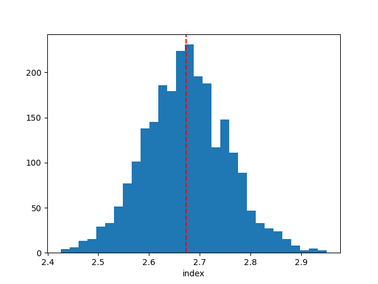
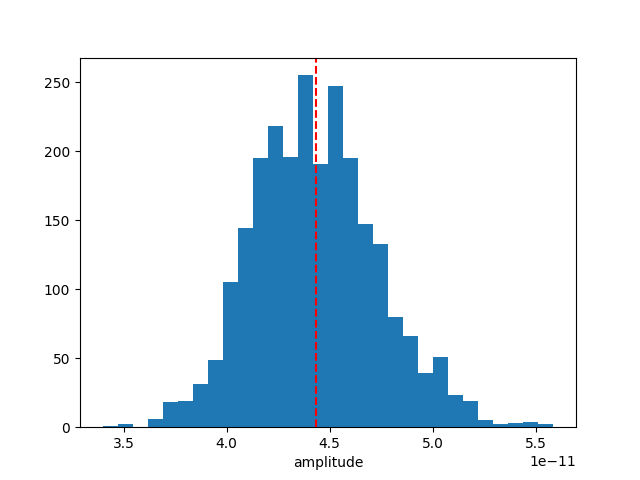

Note
Go to the end to download the full example code or to run this example in your browser via Binder.
Bayesian analysis with nested sampling#
A demonstration of a Bayesian analysis using the nested sampling technique.
Context#
1. Bayesian analysis#
Bayesian inference uses prior knowledge, in the form of a prior distribution, in order to estimate posterior probabilities which we traditionally visualise in the form of corner plots. These distributions contain more information than a maximum likelihood fit as they reveal not only the “best model” but provide a more accurate representation of errors and correlation between parameters. In particular, non-Gaussian degeneracies are complex to estimate with a maximum likelihood approach.
2. Limitations of the Markov Chain Monte Carlo approach#
A well-known approach to estimate this posterior distribution is the Markov Chain Monte Carlo (MCMC). This uses an ensemble of walkers to produce a chain of samples that after a convergence period will reach a stationary state. Once convergence is reached, the successive elements of the chain are samples of the target posterior distribution. However, the weakness of the MCMC approach lies in the “Once convergence” part. If the walkers are started far from the best likelihood region, the convergence time can be long or never reached if the walkers fall in a local minima. The choice of the initialisation point can become critical for complex models with a high number of dimensions and the ability of these walkers to escape a local minimum or to accurately describe a complex likelihood space is not guaranteed.
3. Nested sampling approach#
To overcome these issues, the nested sampling (NS) algorithm has gained traction in physics and astronomy. It is a Monte Carlo algorithm for computing an integral of the likelihood function over the prior model parameter space introduced in Skilling, 2004. The method performs this integral by evolving a collection of points through the parameter space (see recent reviews from Ashton et al., 2022, and Buchner, 2023). Without going into too many details, one important specificity of the NS method is that it starts from the entire parameter space and evolves a collection of live points to map all minima (including multiple modes if any), whereas Markov Chain Monte Carlo methods require an initialisation point and the walkers will explore the local likelihood. The ability of these walkers to escape a local minimum or to accurately describe a complex likelihood space is not guaranteed. This is a fundamental difference with MCMC or Minuit which will only ever probe the vicinity along their minimisation paths and do not have an overview of the global likelihood landscape. The analysis using the NS framework is more CPU time consuming than a standard classical fit, but it provides the full posterior distribution for all parameters, which is out of reach with traditional fitting techniques (N*(N-1)/2 contour plots to generate). In addition, it is more robust to the choice of initialisation, requires less human intervention and is therefore readily integrated in pipeline analysis. In Gammapy, we used the NS implementation of the UltraNest package (see here for more information), one of the leading package in Astronomy (already used in Cosmology and in X-rays). For a nice visualisation of the NS method see here : sampling visualisation. And for a tutorial of UltraNest applied to X-ray fitting with concrete examples and questions see : BXA Tutorial.
Note: please cite UltraNest if used for a paper
If you are using the “UltraNest” library for a paper, please follow its citation scheme: Cite UltraNest.
Proposed approach#
In this example, we will perform a Bayesian analysis with multiple 1D spectra of the Crab nebula data and investigate their posterior distributions.
Setup#
As usual, we’ll start with some setup …
import matplotlib.pyplot as plt
import numpy as np
import astropy.units as u
from gammapy.datasets import Datasets
from gammapy.datasets import SpectrumDatasetOnOff
from gammapy.modeling.models import (
SkyModel,
UniformPrior,
LogUniformPrior,
)
from gammapy.modeling.sampler import Sampler
Loading the spectral datasets#
Here we will load a few Crab 1D spectral data for which we will do a fit.
path = "$GAMMAPY_DATA/joint-crab/spectra/hess/"
datasets = Datasets()
for id in ["23526", "23559", "23592"]:
dataset = SpectrumDatasetOnOff.read(f"{path}pha_obs{id}.fits")
datasets.append(dataset)
Model definition#
Now we want to define the spectral model that will be fitted to the data. The Crab spectra will be fitted here with a simple powerlaw for simplicity.
model = SkyModel.create(spectral_model="pl", name="crab")
Warning
Priors definition: Unlike a traditional fit where priors on the parameters are optional, here it is inherent to the Bayesian approach and are therefore mandatory.
In this case we will set (min,max) prior that will define the
boundaries in which the sampling will be performed.
Note that it is usually recommended to use a LogUniformPrior for
the parameters that have a large amplitude range like the
amplitude parameter.
A UniformPrior means that the samples will be drawn with uniform
probability between the (min,max) values in the linear or log space
in the case of a LogUniformPrior.
model.spectral_model.amplitude.prior = LogUniformPrior(min=1e-12, max=1e-10)
model.spectral_model.index.prior = UniformPrior(min=1, max=5)
datasets.models = [model]
print(datasets.models)
DatasetModels
Component 0: SkyModel
Name : crab
Datasets names : None
Spectral model type : PowerLawSpectralModel
Spatial model type :
Temporal model type :
Parameters:
index : 2.000 +/- 0.00
amplitude : 1.00e-12 +/- 0.0e+00 1 / (TeV s cm2)
reference (frozen): 1.000 TeV
Defining the sampler and options#
As for the Fit object, the Sampler object can receive
different backend (although just one is available for now).
The Sampler comes with “reasonable” default parameters, but you can
change them via the sampler_opts dictionary.
Here is a short description of the most relevant parameters that you
could change :
live_points: minimum number of live points throughout the run. More points allow to discover multiple peaks if existing, but is slower. To test the Prior boundaries and for debugging, a lower number (~100) can be used before a production run with more points (~400 or more).frac_remain: the cut-off condition for the integration, set by the maximum allowed fraction of posterior mass left in the live points vs the dead points. High values (e.g., 0.5) are faster and can be used if the posterior distribution is a relatively simple shape. A low value (1e-1, 1e-2) is optimal for finding peaks, but slower.log_dir: directory where the output files will be stored. If set to None, no files will be written. If set to a string, a directory will be created containing the ongoing status of the run and final results. For time consuming analysis, it is highly recommended to use that option to monitor the run and restart it in case of a crash (withresume=True).
Important note: unlike the MCMC method, you don’t need to define the number of steps for which the sampler will run. The algorithm will automatically stop once a convergence criteria has been reached.
sampler_opts = {
"live_points": 300,
"frac_remain": 0.3,
"log_dir": None,
}
sampler = Sampler(backend="ultranest", sampler_opts=sampler_opts)
Next we can run the sampler on a given dataset. No options are accepted in the run method.
[ultranest] Sampling 300 live points from prior ...
Mono-modal Volume: ~exp(-4.01) * Expected Volume: exp(0.00) Quality: ok
index : +1.0|************************************************| +5.0
amplitude: +1.0e-12|************************ ******* ******** *** | +1.0e-10
Z=-inf(0.00%) | Like=-3458.92..-61.27 [-3458.9229..-317.0593] | it/evals=0/301 eff=0.0000% N=300
Z=-557.4(0.00%) | Like=-551.08..-61.13 [-3458.9229..-317.0593] | it/evals=22/323 eff=95.6522% N=300
Z=-549.7(0.00%) | Like=-542.02..-61.13 [-3458.9229..-317.0593] | it/evals=30/332 eff=93.7500% N=300
Z=-528.1(0.00%) | Like=-521.92..-61.13 [-3458.9229..-317.0593] | it/evals=52/355 eff=94.5455% N=300
Z=-516.7(0.00%) | Like=-507.77..-61.13 [-3458.9229..-317.0593] | it/evals=60/364 eff=93.7500% N=300
Mono-modal Volume: ~exp(-4.01) Expected Volume: exp(-0.22) Quality: ok
index : +1.0|************************************************| +5.0
amplitude: +1.0e-12|****************** ******* ***** ** ***** ** | +1.0e-10
Z=-477.9(0.00%) | Like=-471.54..-61.13 [-3458.9229..-317.0593] | it/evals=79/384 eff=94.0476% N=300
Z=-465.6(0.00%) | Like=-459.55..-61.13 [-3458.9229..-317.0593] | it/evals=90/396 eff=93.7500% N=300
Z=-431.4(0.00%) | Like=-424.91..-61.13 [-3458.9229..-317.0593] | it/evals=109/419 eff=91.5966% N=300
Z=-417.1(0.00%) | Like=-411.28..-60.41 [-3458.9229..-317.0593] | it/evals=120/436 eff=88.2353% N=300
Mono-modal Volume: ~exp(-4.34) * Expected Volume: exp(-0.45) Quality: ok
index : +1.0|************************************************| +5.0
amplitude: +1.0e-12|******************************** ** ***** ** * | +1.0e-10
Z=-403.5(0.00%) | Like=-397.62..-60.41 [-3458.9229..-317.0593] | it/evals=134/453 eff=87.5817% N=300
Z=-389.0(0.00%) | Like=-383.05..-60.41 [-3458.9229..-317.0593] | it/evals=149/476 eff=84.6591% N=300
Z=-388.4(0.00%) | Like=-382.67..-60.41 [-3458.9229..-317.0593] | it/evals=150/479 eff=83.7989% N=300
Z=-373.4(0.00%) | Like=-365.98..-60.41 [-3458.9229..-317.0593] | it/evals=169/501 eff=84.0796% N=300
Z=-357.8(0.00%) | Like=-350.08..-60.41 [-3458.9229..-317.0593] | it/evals=180/518 eff=82.5688% N=300
Z=-332.9(0.00%) | Like=-325.09..-60.41 [-3458.9229..-317.0593] | it/evals=198/541 eff=82.1577% N=300
Mono-modal Volume: ~exp(-4.47) * Expected Volume: exp(-0.67) Quality: ok
index : +1.0| *********************************************| +5.0
amplitude: +1.0e-12| ********************************** ***** *** * | +1.0e-10
Z=-329.5(0.00%) | Like=-322.35..-60.41 [-3458.9229..-317.0593] | it/evals=201/544 eff=82.3770% N=300
Z=-318.9(0.00%) | Like=-312.95..-60.41 [-316.0665..-177.5868] | it/evals=210/555 eff=82.3529% N=300
Z=-301.8(0.00%) | Like=-294.38..-60.41 [-316.0665..-177.5868] | it/evals=227/579 eff=81.3620% N=300
Z=-292.2(0.00%) | Like=-285.51..-60.41 [-316.0665..-177.5868] | it/evals=240/599 eff=80.2676% N=300
Z=-277.3(0.00%) | Like=-270.30..-60.41 [-316.0665..-177.5868] | it/evals=257/622 eff=79.8137% N=300
Mono-modal Volume: ~exp(-4.62) * Expected Volume: exp(-0.89) Quality: ok
index : +1.0| ********************************************| +5.0
amplitude: +1.0e-12| *************************************** *** **| +1.0e-10
Z=-271.2(0.00%) | Like=-265.43..-60.41 [-316.0665..-177.5868] | it/evals=268/636 eff=79.7619% N=300
Z=-270.5(0.00%) | Like=-264.50..-60.41 [-316.0665..-177.5868] | it/evals=270/638 eff=79.8817% N=300
Z=-253.4(0.00%) | Like=-246.71..-60.41 [-316.0665..-177.5868] | it/evals=290/661 eff=80.3324% N=300
Z=-242.8(0.00%) | Like=-236.85..-60.41 [-316.0665..-177.5868] | it/evals=300/673 eff=80.4290% N=300
Z=-233.4(0.00%) | Like=-227.08..-60.41 [-316.0665..-177.5868] | it/evals=315/697 eff=79.3451% N=300
Z=-221.1(0.00%) | Like=-213.93..-60.41 [-316.0665..-177.5868] | it/evals=329/720 eff=78.3333% N=300
Z=-220.2(0.00%) | Like=-213.73..-60.41 [-316.0665..-177.5868] | it/evals=330/721 eff=78.3848% N=300
Mono-modal Volume: ~exp(-5.31) * Expected Volume: exp(-1.12) Quality: ok
index : +1.0| ******************************************| +5.0
amplitude: +1.0e-12| ************************************* ******| +1.0e-10
Z=-218.4(0.00%) | Like=-213.03..-60.41 [-316.0665..-177.5868] | it/evals=335/727 eff=78.4543% N=300
Z=-211.0(0.00%) | Like=-205.10..-60.41 [-316.0665..-177.5868] | it/evals=351/750 eff=78.0000% N=300
Z=-207.9(0.00%) | Like=-201.82..-60.41 [-316.0665..-177.5868] | it/evals=360/761 eff=78.0911% N=300
Z=-198.8(0.00%) | Like=-192.66..-60.41 [-316.0665..-177.5868] | it/evals=377/784 eff=77.8926% N=300
Z=-192.2(0.00%) | Like=-185.38..-60.41 [-316.0665..-177.5868] | it/evals=390/801 eff=77.8443% N=300
Mono-modal Volume: ~exp(-5.36) * Expected Volume: exp(-1.34) Quality: ok
index : +1.0| ************************************ | +5.0
amplitude: +1.0e-12| *******************************************| +1.0e-10
Z=-185.1(0.00%) | Like=-178.65..-60.41 [-316.0665..-177.5868] | it/evals=402/819 eff=77.4566% N=300
Z=-181.4(0.00%) | Like=-175.53..-59.02 [-177.5743..-126.5271] | it/evals=418/842 eff=77.1218% N=300
Z=-181.0(0.00%) | Like=-174.74..-59.02 [-177.5743..-126.5271] | it/evals=420/844 eff=77.2059% N=300
Z=-176.1(0.00%) | Like=-169.43..-59.02 [-177.5743..-126.5271] | it/evals=436/867 eff=76.8959% N=300
Z=-171.6(0.00%) | Like=-165.29..-59.02 [-177.5743..-126.5271] | it/evals=450/885 eff=76.9231% N=300
Z=-165.9(0.00%) | Like=-159.82..-59.02 [-177.5743..-126.5271] | it/evals=467/908 eff=76.8092% N=300
Mono-modal Volume: ~exp(-5.74) * Expected Volume: exp(-1.56) Quality: ok
index : +1.0| ********************************* | +5.0
amplitude: +1.0e-12| *************************************** * | +1.0e-10
Z=-165.4(0.00%) | Like=-159.65..-59.02 [-177.5743..-126.5271] | it/evals=469/910 eff=76.8852% N=300
Z=-161.9(0.00%) | Like=-155.41..-59.02 [-177.5743..-126.5271] | it/evals=480/925 eff=76.8000% N=300
Z=-157.3(0.00%) | Like=-151.11..-59.02 [-177.5743..-126.5271] | it/evals=495/949 eff=76.2712% N=300
Z=-154.2(0.00%) | Like=-148.12..-59.02 [-177.5743..-126.5271] | it/evals=510/970 eff=76.1194% N=300
Z=-150.4(0.00%) | Like=-144.46..-59.02 [-177.5743..-126.5271] | it/evals=526/993 eff=75.9019% N=300
Mono-modal Volume: ~exp(-5.74) Expected Volume: exp(-1.79) Quality: ok
index : +1.0| ***************************** | +5.0
amplitude: +1.0e-12| ************************************* | +1.0e-10
Z=-147.9(0.00%) | Like=-141.69..-59.02 [-177.5743..-126.5271] | it/evals=539/1014 eff=75.4902% N=300
Z=-147.7(0.00%) | Like=-141.56..-59.02 [-177.5743..-126.5271] | it/evals=540/1015 eff=75.5245% N=300
Z=-142.7(0.00%) | Like=-136.50..-59.02 [-177.5743..-126.5271] | it/evals=559/1038 eff=75.7453% N=300
Z=-140.3(0.00%) | Like=-134.37..-59.02 [-177.5743..-126.5271] | it/evals=570/1054 eff=75.5968% N=300
Z=-136.1(0.00%) | Like=-130.25..-59.02 [-177.5743..-126.5271] | it/evals=589/1078 eff=75.7069% N=300
Z=-134.7(0.00%) | Like=-129.00..-59.02 [-177.5743..-126.5271] | it/evals=600/1091 eff=75.8534% N=300
Mono-modal Volume: ~exp(-5.85) * Expected Volume: exp(-2.01) Quality: ok
index : +1.0| ************************** +4.0 | +5.0
amplitude: +1.0e-12| ****************************** **** | +1.0e-10
Z=-134.2(0.00%) | Like=-128.00..-58.96 [-177.5743..-126.5271] | it/evals=603/1095 eff=75.8491% N=300
Z=-131.7(0.00%) | Like=-125.75..-58.96 [-126.4104..-90.7430] | it/evals=618/1118 eff=75.5501% N=300
Z=-129.4(0.00%) | Like=-123.40..-58.96 [-126.4104..-90.7430] | it/evals=630/1139 eff=75.0894% N=300
Z=-126.5(0.00%) | Like=-119.95..-58.96 [-126.4104..-90.7430] | it/evals=645/1162 eff=74.8260% N=300
Z=-121.8(0.00%) | Like=-115.39..-58.96 [-126.4104..-90.7430] | it/evals=660/1181 eff=74.9149% N=300
Mono-modal Volume: ~exp(-6.28) * Expected Volume: exp(-2.23) Quality: ok
index : +1.0| +2.0 ********************** +3.7 | +5.0
amplitude: +1.0e-12| ******************************* | +1.0e-10
Z=-118.6(0.00%) | Like=-112.43..-58.96 [-126.4104..-90.7430] | it/evals=670/1194 eff=74.9441% N=300
Z=-115.1(0.00%) | Like=-108.53..-58.96 [-126.4104..-90.7430] | it/evals=688/1217 eff=75.0273% N=300
Z=-114.7(0.00%) | Like=-108.48..-58.96 [-126.4104..-90.7430] | it/evals=690/1223 eff=74.7562% N=300
Z=-111.8(0.00%) | Like=-105.46..-58.96 [-126.4104..-90.7430] | it/evals=707/1246 eff=74.7357% N=300
Z=-109.6(0.00%) | Like=-103.37..-58.96 [-126.4104..-90.7430] | it/evals=720/1265 eff=74.6114% N=300
Mono-modal Volume: ~exp(-6.28) Expected Volume: exp(-2.46) Quality: ok
index : +1.0| +2.0 ******************* +3.6 | +5.0
amplitude: +1.0e-12| *************************** +7.6e-11 | +1.0e-10
Z=-107.4(0.00%) | Like=-100.99..-58.96 [-126.4104..-90.7430] | it/evals=737/1288 eff=74.5951% N=300
Z=-105.7(0.00%) | Like=-99.26..-58.96 [-126.4104..-90.7430] | it/evals=750/1303 eff=74.7757% N=300
Z=-103.7(0.00%) | Like=-97.61..-58.96 [-126.4104..-90.7430] | it/evals=763/1328 eff=74.2218% N=300
Z=-101.3(0.00%) | Like=-94.80..-58.96 [-126.4104..-90.7430] | it/evals=779/1352 eff=74.0494% N=300
Z=-101.2(0.00%) | Like=-94.71..-58.96 [-126.4104..-90.7430] | it/evals=780/1354 eff=74.0038% N=300
Z=-99.2(0.00%) | Like=-92.57..-58.96 [-126.4104..-90.7430] | it/evals=793/1377 eff=73.6305% N=300
Mono-modal Volume: ~exp(-7.06) * Expected Volume: exp(-2.68) Quality: ok
index : +1.0| +2.1 ***************** +3.5 | +5.0
amplitude: +1.0e-12| +2.4e-11 ************************ +7.3e-11 | +1.0e-10
Z=-97.8(0.00%) | Like=-91.43..-58.96 [-126.4104..-90.7430] | it/evals=804/1391 eff=73.6939% N=300
Z=-97.1(0.00%) | Like=-90.84..-58.96 [-126.4104..-90.7430] | it/evals=810/1399 eff=73.7034% N=300
Z=-95.6(0.00%) | Like=-89.70..-58.96 [-90.6441..-75.3942] | it/evals=824/1423 eff=73.3749% N=300
Z=-94.1(0.00%) | Like=-87.61..-58.96 [-90.6441..-75.3942] | it/evals=840/1444 eff=73.4266% N=300
Z=-91.9(0.00%) | Like=-85.47..-58.96 [-90.6441..-75.3942] | it/evals=859/1466 eff=73.6707% N=300
Z=-90.7(0.00%) | Like=-84.47..-58.96 [-90.6441..-75.3942] | it/evals=870/1479 eff=73.7913% N=300
Mono-modal Volume: ~exp(-7.29) * Expected Volume: exp(-2.90) Quality: ok
index : +1.0| +2.2 **************** +3.4 | +5.0
amplitude: +1.0e-12| +2.7e-11 ********************* +6.8e-11 | +1.0e-10
Z=-90.6(0.00%) | Like=-84.14..-58.96 [-90.6441..-75.3942] | it/evals=871/1480 eff=73.8136% N=300
Z=-88.9(0.00%) | Like=-82.66..-58.96 [-90.6441..-75.3942] | it/evals=889/1502 eff=73.9601% N=300
Z=-88.0(0.00%) | Like=-81.94..-58.96 [-90.6441..-75.3942] | it/evals=900/1515 eff=74.0741% N=300
Z=-86.8(0.00%) | Like=-80.64..-58.96 [-90.6441..-75.3942] | it/evals=918/1537 eff=74.2118% N=300
Z=-85.9(0.00%) | Like=-79.77..-58.96 [-90.6441..-75.3942] | it/evals=930/1556 eff=74.0446% N=300
Mono-modal Volume: ~exp(-7.35) * Expected Volume: exp(-3.13) Quality: ok
index : +1.0| +2.2 ************** +3.3 | +5.0
amplitude: +1.0e-12| +2.8e-11 ******************* +6.6e-11 | +1.0e-10
Z=-85.4(0.00%) | Like=-79.31..-58.96 [-90.6441..-75.3942] | it/evals=938/1565 eff=74.1502% N=300
Z=-84.4(0.00%) | Like=-78.25..-58.87 [-90.6441..-75.3942] | it/evals=954/1587 eff=74.1259% N=300
Z=-84.0(0.00%) | Like=-77.85..-58.87 [-90.6441..-75.3942] | it/evals=960/1594 eff=74.1886% N=300
Z=-83.3(0.00%) | Like=-77.21..-58.87 [-90.6441..-75.3942] | it/evals=973/1617 eff=73.8800% N=300
Z=-82.4(0.00%) | Like=-76.28..-58.87 [-90.6441..-75.3942] | it/evals=990/1639 eff=73.9358% N=300
Mono-modal Volume: ~exp(-7.51) * Expected Volume: exp(-3.35) Quality: ok
index : +1.0| +2.2 ************* +3.2 | +5.0
amplitude: +1.0e-12| +2.9e-11 ****************** +6.4e-11 | +1.0e-10
Z=-81.6(0.00%) | Like=-75.44..-58.87 [-90.6441..-75.3942] | it/evals=1005/1658 eff=74.0059% N=300
Z=-80.8(0.00%) | Like=-74.56..-58.87 [-75.3780..-66.9553] | it/evals=1020/1680 eff=73.9130% N=300
Z=-79.9(0.00%) | Like=-73.66..-58.87 [-75.3780..-66.9553] | it/evals=1037/1704 eff=73.8604% N=300
Z=-79.3(0.00%) | Like=-73.13..-58.87 [-75.3780..-66.9553] | it/evals=1050/1723 eff=73.7878% N=300
Z=-78.6(0.00%) | Like=-72.24..-58.87 [-75.3780..-66.9553] | it/evals=1066/1746 eff=73.7206% N=300
Mono-modal Volume: ~exp(-7.51) Expected Volume: exp(-3.57) Quality: ok
index : +1.0| +2.3 *********** +3.1 | +5.0
amplitude: +1.0e-12| +3.1e-11 **************** +6.1e-11 | +1.0e-10
Z=-77.8(0.00%) | Like=-71.46..-58.87 [-75.3780..-66.9553] | it/evals=1080/1763 eff=73.8209% N=300
Z=-77.0(0.00%) | Like=-70.62..-58.87 [-75.3780..-66.9553] | it/evals=1096/1786 eff=73.7550% N=300
Z=-76.4(0.00%) | Like=-70.05..-58.87 [-75.3780..-66.9553] | it/evals=1110/1807 eff=73.6563% N=300
Z=-75.8(0.00%) | Like=-69.55..-58.82 [-75.3780..-66.9553] | it/evals=1124/1830 eff=73.4641% N=300
Z=-75.2(0.00%) | Like=-68.90..-58.82 [-75.3780..-66.9553] | it/evals=1138/1854 eff=73.2304% N=300
Mono-modal Volume: ~exp(-7.64) * Expected Volume: exp(-3.80) Quality: ok
index : +1.0| +2.3 ********** +3.1 | +5.0
amplitude: +1.0e-12| +3.2e-11 ************** +5.9e-11 | +1.0e-10
Z=-75.1(0.00%) | Like=-68.86..-58.82 [-75.3780..-66.9553] | it/evals=1139/1855 eff=73.2476% N=300
Z=-75.1(0.00%) | Like=-68.85..-58.82 [-75.3780..-66.9553] | it/evals=1140/1856 eff=73.2648% N=300
Z=-74.6(0.01%) | Like=-68.40..-58.82 [-75.3780..-66.9553] | it/evals=1154/1880 eff=73.0380% N=300
Z=-74.1(0.01%) | Like=-67.98..-58.80 [-75.3780..-66.9553] | it/evals=1169/1903 eff=72.9258% N=300
Z=-74.1(0.01%) | Like=-67.95..-58.80 [-75.3780..-66.9553] | it/evals=1170/1904 eff=72.9426% N=300
Z=-73.6(0.01%) | Like=-67.65..-58.78 [-75.3780..-66.9553] | it/evals=1186/1927 eff=72.8949% N=300
Z=-73.3(0.02%) | Like=-67.27..-58.78 [-75.3780..-66.9553] | it/evals=1199/1951 eff=72.6227% N=300
Z=-73.3(0.02%) | Like=-67.16..-58.78 [-75.3780..-66.9553] | it/evals=1200/1953 eff=72.5953% N=300
Mono-modal Volume: ~exp(-8.15) * Expected Volume: exp(-4.02) Quality: ok
index : +1.0| +2.4 ********* +3.0 | +5.0
amplitude: +1.0e-12| +3.3e-11 ************* +5.8e-11 | +1.0e-10
Z=-73.1(0.02%) | Like=-67.04..-58.78 [-75.3780..-66.9553] | it/evals=1206/1963 eff=72.5195% N=300
Z=-72.8(0.03%) | Like=-66.73..-58.78 [-66.9463..-65.1544] | it/evals=1221/1989 eff=72.2913% N=300
Z=-72.5(0.04%) | Like=-66.39..-58.78 [-66.9463..-65.1544] | it/evals=1230/2000 eff=72.3529% N=300
Z=-72.1(0.06%) | Like=-65.87..-58.78 [-66.9463..-65.1544] | it/evals=1248/2022 eff=72.4739% N=300
Z=-71.8(0.09%) | Like=-65.60..-58.78 [-66.9463..-65.1544] | it/evals=1260/2043 eff=72.2892% N=300
Mono-modal Volume: ~exp(-8.57) * Expected Volume: exp(-4.24) Quality: ok
index : +1.0| +2.4 ******** +3.0 | +5.0
amplitude: +1.0e-12| +3.5e-11 *********** +5.6e-11 | +1.0e-10
Z=-71.5(0.12%) | Like=-65.35..-58.78 [-66.9463..-65.1544] | it/evals=1273/2060 eff=72.3295% N=300
Z=-71.1(0.18%) | Like=-65.08..-58.78 [-65.0848..-64.9994] | it/evals=1290/2083 eff=72.3500% N=300
Z=-70.8(0.25%) | Like=-64.68..-58.78 [-64.6842..-64.6738] | it/evals=1307/2107 eff=72.3298% N=300
Z=-70.6(0.32%) | Like=-64.36..-58.78 [-64.3609..-64.3207] | it/evals=1320/2124 eff=72.3684% N=300
Z=-70.2(0.46%) | Like=-63.98..-58.78 [-63.9950..-63.9822] | it/evals=1336/2146 eff=72.3727% N=300
Mono-modal Volume: ~exp(-8.80) * Expected Volume: exp(-4.47) Quality: ok
index : +1.0| +2.4 ******* +3.0 | +5.0
amplitude: +1.0e-12| +3.5e-11 ********** +5.4e-11 | +1.0e-10
Z=-70.2(0.50%) | Like=-63.91..-58.78 [-63.9085..-63.9036]*| it/evals=1340/2152 eff=72.3542% N=300
Z=-70.0(0.60%) | Like=-63.74..-58.78 [-63.7409..-63.7091] | it/evals=1350/2165 eff=72.3861% N=300
Z=-69.7(0.80%) | Like=-63.50..-58.78 [-63.5132..-63.4982] | it/evals=1367/2187 eff=72.4430% N=300
Z=-69.5(0.99%) | Like=-63.35..-58.78 [-63.3641..-63.3525] | it/evals=1380/2207 eff=72.3650% N=300
Z=-69.3(1.20%) | Like=-63.10..-58.78 [-63.0988..-63.0958]*| it/evals=1394/2230 eff=72.2280% N=300
Mono-modal Volume: ~exp(-8.85) * Expected Volume: exp(-4.69) Quality: ok
index : +1.0| +2.4 ****** +2.9 | +5.0
amplitude: +1.0e-12| +3.6e-11 ********* +5.3e-11 | +1.0e-10
Z=-69.1(1.45%) | Like=-62.90..-58.78 [-62.9305..-62.9046] | it/evals=1407/2251 eff=72.1169% N=300
Z=-69.0(1.51%) | Like=-62.85..-58.78 [-62.8547..-62.8439] | it/evals=1410/2255 eff=72.1228% N=300
Z=-68.8(1.94%) | Like=-62.60..-58.78 [-62.6169..-62.5964] | it/evals=1429/2277 eff=72.2812% N=300
Z=-68.6(2.25%) | Like=-62.45..-58.78 [-62.4455..-62.4213] | it/evals=1440/2290 eff=72.3618% N=300
Z=-68.4(2.84%) | Like=-62.30..-58.78 [-62.2984..-62.2895]*| it/evals=1459/2312 eff=72.5149% N=300
Z=-68.3(3.24%) | Like=-62.15..-58.78 [-62.1543..-62.1483]*| it/evals=1470/2330 eff=72.4138% N=300
Mono-modal Volume: ~exp(-9.12) * Expected Volume: exp(-4.91) Quality: ok
index : +1.0| +2.5 ****** +2.9 | +5.0
amplitude: +1.0e-12| +3.7e-11 ******** +5.2e-11 | +1.0e-10
Z=-68.2(3.37%) | Like=-62.13..-58.78 [-62.1335..-62.1309]*| it/evals=1474/2334 eff=72.4680% N=300
Z=-68.1(4.04%) | Like=-61.96..-58.78 [-61.9576..-61.9169] | it/evals=1489/2356 eff=72.4222% N=300
Z=-67.9(4.52%) | Like=-61.82..-58.78 [-61.8222..-61.8204]*| it/evals=1500/2367 eff=72.5689% N=300
Z=-67.8(5.44%) | Like=-61.63..-58.78 [-61.6295..-61.6232]*| it/evals=1518/2389 eff=72.6663% N=300
Z=-67.7(6.10%) | Like=-61.54..-58.78 [-61.5517..-61.5410] | it/evals=1530/2406 eff=72.6496% N=300
Mono-modal Volume: ~exp(-9.54) * Expected Volume: exp(-5.14) Quality: ok
index : +1.0| +2.5 ****** +2.9 | +5.0
amplitude: +1.0e-12| +3.8e-11 ******** +5.2e-11 | +1.0e-10
Z=-67.6(6.78%) | Like=-61.47..-58.78 [-61.4664..-61.4619]*| it/evals=1541/2421 eff=72.6544% N=300
Z=-67.4(7.76%) | Like=-61.35..-58.78 [-61.3638..-61.3463] | it/evals=1556/2443 eff=72.6085% N=300
Z=-67.4(7.99%) | Like=-61.29..-58.78 [-61.2938..-61.2712] | it/evals=1560/2449 eff=72.5919% N=300
Z=-67.3(9.03%) | Like=-61.18..-58.78 [-61.1755..-61.1708]*| it/evals=1575/2473 eff=72.4804% N=300
Z=-67.2(10.03%) | Like=-61.07..-58.77 [-61.0747..-61.0673]*| it/evals=1590/2497 eff=72.3714% N=300
Z=-67.1(10.99%) | Like=-60.98..-58.77 [-60.9940..-60.9810] | it/evals=1603/2519 eff=72.2397% N=300
Mono-modal Volume: ~exp(-9.55) * Expected Volume: exp(-5.36) Quality: ok
index : +1.0| +2.5 ***** +2.9 | +5.0
amplitude: +1.0e-12| +3.8e-11 ******* +5.1e-11 | +1.0e-10
Z=-67.0(11.31%) | Like=-60.96..-58.77 [-60.9705..-60.9600] | it/evals=1608/2529 eff=72.1400% N=300
Z=-67.0(12.22%) | Like=-60.88..-58.77 [-60.8908..-60.8764] | it/evals=1620/2542 eff=72.2569% N=300
Z=-66.8(13.70%) | Like=-60.80..-58.77 [-60.8001..-60.7955]*| it/evals=1637/2563 eff=72.3376% N=300
Z=-66.8(14.81%) | Like=-60.70..-58.77 [-60.7152..-60.7002] | it/evals=1650/2578 eff=72.4320% N=300
Z=-66.7(16.40%) | Like=-60.55..-58.77 [-60.5540..-60.5526]*| it/evals=1668/2600 eff=72.5217% N=300
Mono-modal Volume: ~exp(-9.55) Expected Volume: exp(-5.58) Quality: ok
index : +1.0| +2.5 **** +2.8 | +5.0
amplitude: +1.0e-12| +3.9e-11 ****** +5.0e-11 | +1.0e-10
Z=-66.6(17.38%) | Like=-60.52..-58.77 [-60.5181..-60.5091]*| it/evals=1678/2621 eff=72.2964% N=300
Z=-66.6(17.61%) | Like=-60.50..-58.77 [-60.5014..-60.4886] | it/evals=1680/2623 eff=72.3203% N=300
Z=-66.5(19.21%) | Like=-60.39..-58.77 [-60.3881..-60.3880]*| it/evals=1696/2647 eff=72.2625% N=300
Z=-66.4(20.36%) | Like=-60.33..-58.77 [-60.3261..-60.3150] | it/evals=1709/2670 eff=72.1097% N=300
Z=-66.4(20.49%) | Like=-60.32..-58.77 [-60.3261..-60.3150] | it/evals=1710/2671 eff=72.1215% N=300
Z=-66.4(21.97%) | Like=-60.22..-58.77 [-60.2216..-60.2116] | it/evals=1724/2694 eff=72.0134% N=300
Z=-66.3(23.66%) | Like=-60.11..-58.77 [-60.1114..-60.1103]*| it/evals=1740/2717 eff=71.9901% N=300
Mono-modal Volume: ~exp(-9.55) Expected Volume: exp(-5.81) Quality: ok
index : +1.0| +2.5 **** +2.8 | +5.0
amplitude: +1.0e-12| +4.0e-11 ****** +4.9e-11 | +1.0e-10
Z=-66.2(25.87%) | Like=-59.99..-58.77 [-60.0048..-59.9915] | it/evals=1758/2738 eff=72.1083% N=300
Z=-66.1(27.45%) | Like=-59.90..-58.77 [-59.8971..-59.8927]*| it/evals=1770/2762 eff=71.8928% N=300
Z=-66.1(28.99%) | Like=-59.86..-58.77 [-59.8559..-59.8510]*| it/evals=1782/2785 eff=71.7103% N=300
Z=-66.0(30.51%) | Like=-59.81..-58.77 [-59.8101..-59.8085]*| it/evals=1794/2810 eff=71.4741% N=300
Z=-66.0(31.37%) | Like=-59.79..-58.77 [-59.7918..-59.7915]*| it/evals=1800/2821 eff=71.4002% N=300
Mono-modal Volume: ~exp(-10.49) * Expected Volume: exp(-6.03) Quality: ok
index : +1.0| +2.6 **** +2.8 | +5.0
amplitude: +1.0e-12| +4.0e-11 ****** +4.9e-11 | +1.0e-10
Z=-66.0(32.47%) | Like=-59.77..-58.77 [-59.7742..-59.7724]*| it/evals=1809/2836 eff=71.3328% N=300
Z=-65.9(34.02%) | Like=-59.73..-58.75 [-59.7332..-59.7270]*| it/evals=1821/2859 eff=71.1606% N=300
Z=-65.9(35.16%) | Like=-59.70..-58.75 [-59.7029..-59.6981]*| it/evals=1830/2869 eff=71.2339% N=300
Z=-65.8(37.36%) | Like=-59.64..-58.75 [-59.6423..-59.6398]*| it/evals=1848/2892 eff=71.2963% N=300
Z=-65.8(38.75%) | Like=-59.61..-58.75 [-59.6115..-59.6106]*| it/evals=1860/2913 eff=71.1825% N=300
Mono-modal Volume: ~exp(-10.49) Expected Volume: exp(-6.25) Quality: ok
index : +1.0| +2.6 **** +2.8 | +5.0
amplitude: +1.0e-12| +4.1e-11 **** +4.8e-11 | +1.0e-10
Z=-65.7(40.79%) | Like=-59.57..-58.75 [-59.5709..-59.5706]*| it/evals=1876/2935 eff=71.1954% N=300
Z=-65.7(42.55%) | Like=-59.54..-58.75 [-59.5435..-59.5430]*| it/evals=1890/2957 eff=71.1329% N=300
Z=-65.7(44.39%) | Like=-59.51..-58.75 [-59.5084..-59.5059]*| it/evals=1905/2980 eff=71.0821% N=300
Z=-65.6(46.28%) | Like=-59.47..-58.75 [-59.4660..-59.4635]*| it/evals=1920/3002 eff=71.0585% N=300
Z=-65.6(48.28%) | Like=-59.43..-58.75 [-59.4260..-59.4230]*| it/evals=1936/3025 eff=71.0459% N=300
Mono-modal Volume: ~exp(-10.88) * Expected Volume: exp(-6.48) Quality: ok
index : +1.0| +2.6 **** +2.8 | +5.0
amplitude: +1.0e-12| +4.1e-11 **** +4.8e-11 | +1.0e-10
Z=-65.6(49.18%) | Like=-59.41..-58.75 [-59.4062..-59.4049]*| it/evals=1943/3034 eff=71.0680% N=300
Z=-65.5(50.07%) | Like=-59.39..-58.75 [-59.3950..-59.3892]*| it/evals=1950/3045 eff=71.0383% N=300
Z=-65.5(51.93%) | Like=-59.36..-58.75 [-59.3586..-59.3579]*| it/evals=1966/3067 eff=71.0517% N=300
Z=-65.5(53.51%) | Like=-59.33..-58.75 [-59.3310..-59.3307]*| it/evals=1980/3086 eff=71.0696% N=300
Z=-65.4(55.21%) | Like=-59.29..-58.75 [-59.2883..-59.2867]*| it/evals=1996/3109 eff=71.0573% N=300
Mono-modal Volume: ~exp(-11.05) * Expected Volume: exp(-6.70) Quality: ok
index : +1.0| +2.6 *** +2.8 | +5.0
amplitude: +1.0e-12| +4.1e-11 **** +4.7e-11 | +1.0e-10
Z=-65.4(56.74%) | Like=-59.26..-58.75 [-59.2607..-59.2595]*| it/evals=2010/3131 eff=70.9996% N=300
Z=-65.4(58.85%) | Like=-59.23..-58.75 [-59.2261..-59.2257]*| it/evals=2029/3153 eff=71.1181% N=300
Z=-65.4(60.05%) | Like=-59.22..-58.75 [-59.2165..-59.2153]*| it/evals=2040/3165 eff=71.2042% N=300
Z=-65.3(61.78%) | Like=-59.19..-58.75 [-59.1884..-59.1877]*| it/evals=2057/3188 eff=71.2258% N=300
Z=-65.3(63.06%) | Like=-59.17..-58.75 [-59.1670..-59.1666]*| it/evals=2070/3208 eff=71.1829% N=300
Mono-modal Volume: ~exp(-11.33) * Expected Volume: exp(-6.92) Quality: ok
index : +1.0| +2.6 ** +2.7 | +5.0
amplitude: +1.0e-12| +4.2e-11 **** +4.7e-11 | +1.0e-10
Z=-65.3(63.77%) | Like=-59.16..-58.75 [-59.1591..-59.1585]*| it/evals=2077/3217 eff=71.2033% N=300
Z=-65.3(65.24%) | Like=-59.13..-58.75 [-59.1347..-59.1345]*| it/evals=2092/3239 eff=71.1807% N=300
Z=-65.3(65.94%) | Like=-59.13..-58.75 [-59.1311..-59.1296]*| it/evals=2100/3247 eff=71.2589% N=300
Z=-65.2(67.47%) | Like=-59.10..-58.75 [-59.0956..-59.0947]*| it/evals=2117/3269 eff=71.3035% N=300
Z=-65.2(68.64%) | Like=-59.08..-58.75 [-59.0770..-59.0713]*| it/evals=2130/3285 eff=71.3568% N=300
Mono-modal Volume: ~exp(-11.58) * Expected Volume: exp(-7.15) Quality: ok
index : +1.0| +2.6 ** +2.7 | +5.0
amplitude: +1.0e-12| +4.2e-11 **** +4.7e-11 | +1.0e-10
Z=-65.2(69.86%) | Like=-59.06..-58.75 [-59.0579..-59.0575]*| it/evals=2144/3302 eff=71.4191% N=300
[ultranest] Explored until L=-6e+01
[ultranest] Likelihood function evaluations: 3303
[ultranest] logZ = -64.87 +- 0.1044
[ultranest] Effective samples strategy satisfied (ESS = 988.2, need >400)
[ultranest] Posterior uncertainty strategy is satisfied (KL: 0.47+-0.09 nat, need <0.50 nat)
[ultranest] Evidency uncertainty strategy is satisfied (dlogz=0.28, need <0.5)
[ultranest] logZ error budget: single: 0.13 bs:0.10 tail:0.26 total:0.28 required:<0.50
[ultranest] done iterating.
logZ = -64.851 +- 0.354
single instance: logZ = -64.851 +- 0.131
bootstrapped : logZ = -64.866 +- 0.238
tail : logZ = +- 0.262
insert order U test : converged: True correlation: inf iterations
index : 2.399 │ ▁▁▁▁▁▁▂▁▂▂▄▅▄▆▆▆▇▇▇▇▆▄▅▄▃▃▂▁▁▁▁▁▁▁▁▁▁ │2.977 2.673 +- 0.082
amplitude : 0.0000000000329│ ▁ ▁ ▁▁▁▁▁▂▄▄▅▆▆▆▇▆▆▇▆▄▄▃▃▂▂▂▁▁▁▁▁▁▁▁▁ │0.0000000000570 0.0000000000443 +- 0.0000000000030
Understanding the outputs#
In the Jupyter notebook, you should be able to see an interactive visualisation of how the parameter space shrinks which starts from the (min,max) shrinks down towards the optimal parameters.
The output above is filled with interesting information. Here we provide a short description of the most relevant information provided above. For more detailed information see the UltraNest docs.
During the sampling
Z=-68.8(0.53%) | Like=-63.96..-58.75 [-63.9570..-63.9539]*| it/evals=640/1068 eff=73.7327% N=300
Some important information here is:
Progress (0.53%): the completed fraction of the integral. This is not a time progress bar. Stays at zero for a good fraction of the run.
Efficiency (eff value) of the sampling: this indicates out of the proposed new points, how many were accepted. If your efficiency is too small (<<1%), maybe you should revise your priors (e.g use a LogUniform prior for the normalisation).
Final outputs
The final lines indicate that all three “convergence” strategies are satisfied (samples, posterior uncertainty, and evidence uncertainty).
logZ = -65.104 +- 0.292
The main goal of the Nested sampling algorithm is to estimate Z (the Bayesian evidence) which is given above together with an uncertainty. In a similar way to deltaLogLike and deltaAIC, deltaLogZ values can be used for model comparison. For more information see : on the use of the evidence for model comparison. An interesting comparison of the efficiency and false discovery rate of model selection with deltaLogLike and deltaLogZ is given in Appendix C of Buchner et al., 2014.
Results stored on disk
if log_dir is set to a name where the results will be stored, then
a directory is created containing many useful results and plots.
A description of these outputs is given in the Ultranest
docs.
Results#
Within a Bayesian analysis, the concept of best-fit has to be viewed differently from what is done in a gradient descent fit.
The output of the Bayesian analysis is the posterior distribution and there is no “best-fit” output. One has to define, based on the posteriors, what we want to consider as “best-fit” and several options are possible:
the mean of the distribution
the median
the lowest likelihood value
By default the DatasetModels will be updated with the mean of
the posterior distributions.
print(result_joint.models)
DatasetModels
Component 0: SkyModel
Name : crab
Datasets names : None
Spectral model type : PowerLawSpectralModel
Spatial model type :
Temporal model type :
Parameters:
index : 2.673 +/- 0.08
amplitude : 4.43e-11 +/- 3.0e-12 1 / (TeV s cm2)
reference (frozen): 1.000 TeV
The Sampler class returns a very rich dictionary.
The most “standard” information about the posterior distributions can
be found in :
print(result_joint.sampler_results["posterior"])
{'mean': [2.6732780987850884, 4.431137419530465e-11], 'stdev': [0.08244339925697601, 3.04717195001025e-12], 'median': [2.6716348123769604, 4.4113666996117305e-11], 'errlo': [2.5889192781391914, 4.1314774824016854e-11], 'errup': [2.7555619528765174, 4.737955496097893e-11], 'information_gain_bits': [2.6985406120610116, 3.0909836291878205]}
Besides mean, errors, etc, an interesting value is the
information gain which estimates how much the posterior
distribution has shrunk with respect to the prior (i.e. how much
we’ve learned). A value < 1 means that the parameter is poorly
constrained within the prior range (we haven’t learned much with respect to our prior assumption).
For a physical example see this
example.
The SamplerResult dictionary contains also other interesting
information :
print(result_joint.sampler_results.keys())
dict_keys(['niter', 'logz', 'logzerr', 'logz_bs', 'logz_single', 'logzerr_tail', 'logzerr_bs', 'ess', 'H', 'Herr', 'posterior', 'weighted_samples', 'samples', 'maximum_likelihood', 'ncall', 'paramnames', 'logzerr_single', 'insertion_order_MWW_test'])
Of particular interest, the samples used in the process to approximate the posterior distribution can be accessed via :
for i, n in enumerate(model.parameters.free_parameters.names):
s = result_joint.samples[:, i]
fig, ax = plt.subplots()
ax.hist(s, bins=30)
ax.axvline(np.mean(s), ls="--", color="red")
ax.set_xlabel(n)
plt.show()
- 
- 
While the above plots are interesting, the real strength of the Bayesian analysis is to visualise all parameters correlations which is usually done using “corner plots”. Ultranest corner plot function is a wrapper around the corner package. See the above link for optional keywords. Other packages exist for corner plots, like chainconsumer which is discussed later in this tutorial.
from ultranest.plot import cornerplot
cornerplot(
result_joint.sampler_results,
plot_datapoints=True,
plot_density=True,
bins=20,
title_fmt=".2e",
smooth=False,
)
plt.show()
Spectral model error band from samples#
To compute the spectral error band (“butterfly plots”), we will directly use the samples of the posterior distribution. This is more robust as compared to the traditional method of using the covariance matrix of the parameters which implicitly assumes Gaussian errors while for the posterior distribution there is no shape assumed. This difference can become significant when the parameter errors are non-Gaussian. For this we will need to convert the list of samples back to the spectral model parameters with the relevant units (e.g. normalisation units).
def get_samples_from_posterior(spectral_model, results):
"""
Create a list of spectral parameters with correct units
from the unitless parameters returned by the sampler.
"""
n_samples = results.samples.shape[0]
samples = []
for p in spectral_model.parameters:
try:
idx = spectral_model.parameters.free_unique_parameters.index(p)
samples.append(results.samples[:, idx] * p.unit)
except ValueError:
samples.append(np.ones(n_samples) * p.quantity)
return samples
samples = get_samples_from_posterior(datasets.models[0].spectral_model, result_joint)
Next we can provide these samples to the plot_error
method.
Individual run analysis#
Now we’ll analyse several Crab runs individually so that we can compare them.
result_0 = sampler.run(datasets[0])
result_1 = sampler.run(datasets[1])
result_2 = sampler.run(datasets[2])
[ultranest] Sampling 300 live points from prior ...
Mono-modal Volume: ~exp(-3.96) * Expected Volume: exp(0.00) Quality: ok
index : +1.0|************************************************| +5.0
amplitude: +1.0e-12|***************** ******* ******* ******** *****| +1.0e-10
Z=-inf(0.00%) | Like=-1990.18..-20.59 [-1990.1825..-118.1359] | it/evals=0/301 eff=0.0000% N=300
Z=-175.4(0.00%) | Like=-170.98..-20.59 [-1990.1825..-118.1359] | it/evals=30/333 eff=90.9091% N=300
Z=-168.2(0.00%) | Like=-163.49..-20.59 [-1990.1825..-118.1359] | it/evals=60/366 eff=90.9091% N=300
Mono-modal Volume: ~exp(-4.13) * Expected Volume: exp(-0.22) Quality: ok
index : +1.0|************************************************| +5.0
amplitude: +1.0e-12|******************************* * ******** *****| +1.0e-10
Z=-165.2(0.00%) | Like=-159.60..-20.59 [-1990.1825..-118.1359] | it/evals=67/375 eff=89.3333% N=300
Z=-156.2(0.00%) | Like=-151.92..-20.59 [-1990.1825..-118.1359] | it/evals=90/399 eff=90.9091% N=300
Z=-149.2(0.00%) | Like=-144.74..-20.59 [-1990.1825..-118.1359] | it/evals=120/438 eff=86.9565% N=300
Mono-modal Volume: ~exp(-4.72) * Expected Volume: exp(-0.45) Quality: ok
index : +1.0|************************************************| +5.0
amplitude: +1.0e-12|********************************* ******** **** | +1.0e-10
Z=-145.7(0.00%) | Like=-140.81..-20.59 [-1990.1825..-118.1359] | it/evals=134/452 eff=88.1579% N=300
Z=-141.6(0.00%) | Like=-135.91..-20.59 [-1990.1825..-118.1359] | it/evals=150/473 eff=86.7052% N=300
Z=-129.2(0.00%) | Like=-123.92..-20.59 [-1990.1825..-118.1359] | it/evals=180/511 eff=85.3081% N=300
Mono-modal Volume: ~exp(-5.01) * Expected Volume: exp(-0.67) Quality: ok
index : +1.0| **********************************************| +5.0
amplitude: +1.0e-12| ******************************** ******** **** | +1.0e-10
Z=-122.9(0.00%) | Like=-117.39..-20.59 [-118.1058..-72.4502] | it/evals=201/535 eff=85.5319% N=300
Z=-119.8(0.00%) | Like=-114.05..-20.59 [-118.1058..-72.4502] | it/evals=210/545 eff=85.7143% N=300
Z=-110.0(0.00%) | Like=-103.09..-20.59 [-118.1058..-72.4502] | it/evals=240/583 eff=84.8057% N=300
Mono-modal Volume: ~exp(-5.01) Expected Volume: exp(-0.89) Quality: ok
index : +1.0| *********************************************| +5.0
amplitude: +1.0e-12| ******************************* ******** **** | +1.0e-10
Z=-101.3(0.00%) | Like=-95.97..-20.59 [-118.1058..-72.4502] | it/evals=270/618 eff=84.9057% N=300
Z=-95.8(0.00%) | Like=-90.54..-20.59 [-118.1058..-72.4502] | it/evals=297/660 eff=82.5000% N=300
Z=-95.2(0.00%) | Like=-90.01..-20.59 [-118.1058..-72.4502] | it/evals=300/664 eff=82.4176% N=300
Z=-88.9(0.00%) | Like=-83.43..-20.59 [-118.1058..-72.4502] | it/evals=326/705 eff=80.4938% N=300
Z=-88.1(0.00%) | Like=-82.45..-20.59 [-118.1058..-72.4502] | it/evals=330/709 eff=80.6846% N=300
Mono-modal Volume: ~exp(-5.01) Expected Volume: exp(-1.12) Quality: ok
index : +1.0| *******************************************| +5.0
amplitude: +1.0e-12| ******************************* ******** * | +1.0e-10
Z=-84.1(0.00%) | Like=-78.71..-20.59 [-118.1058..-72.4502] | it/evals=351/747 eff=78.5235% N=300
Z=-82.4(0.00%) | Like=-77.25..-20.59 [-118.1058..-72.4502] | it/evals=360/766 eff=77.2532% N=300
Z=-78.0(0.00%) | Like=-73.18..-20.59 [-118.1058..-72.4502] | it/evals=390/807 eff=76.9231% N=300
Mono-modal Volume: ~exp(-5.42) * Expected Volume: exp(-1.34) Quality: ok
index : +1.0| **************************************** | +5.0
amplitude: +1.0e-12| *********************************** * | +1.0e-10
Z=-76.6(0.00%) | Like=-71.77..-20.59 [-72.2117..-47.4641] | it/evals=402/828 eff=76.1364% N=300
Z=-74.6(0.00%) | Like=-69.22..-20.59 [-72.2117..-47.4641] | it/evals=420/851 eff=76.2250% N=300
Z=-71.1(0.00%) | Like=-66.01..-20.59 [-72.2117..-47.4641] | it/evals=444/893 eff=74.8735% N=300
Z=-70.4(0.00%) | Like=-65.18..-20.59 [-72.2117..-47.4641] | it/evals=450/901 eff=74.8752% N=300
Mono-modal Volume: ~exp(-5.42) Expected Volume: exp(-1.56) Quality: ok
index : +1.0| ********************************** | +5.0
amplitude: +1.0e-12| ********************************** +7.8e-11| +1.0e-10
Z=-67.9(0.00%) | Like=-62.94..-20.59 [-72.2117..-47.4641] | it/evals=473/939 eff=74.0219% N=300
Z=-67.3(0.00%) | Like=-62.61..-20.59 [-72.2117..-47.4641] | it/evals=480/946 eff=74.3034% N=300
Z=-65.1(0.00%) | Like=-59.96..-20.59 [-72.2117..-47.4641] | it/evals=504/989 eff=73.1495% N=300
Z=-64.5(0.00%) | Like=-59.27..-20.59 [-72.2117..-47.4641] | it/evals=510/995 eff=73.3813% N=300
Mono-modal Volume: ~exp(-5.42) Expected Volume: exp(-1.79) Quality: ok
index : +1.0| ****************************** +4.1 | +5.0
amplitude: +1.0e-12| ********************************* +7.5e-11 | +1.0e-10
Z=-61.2(0.00%) | Like=-55.98..-20.59 [-72.2117..-47.4641] | it/evals=538/1032 eff=73.4973% N=300
Z=-61.0(0.00%) | Like=-55.53..-20.59 [-72.2117..-47.4641] | it/evals=540/1034 eff=73.5695% N=300
Z=-58.3(0.00%) | Like=-53.02..-20.59 [-72.2117..-47.4641] | it/evals=563/1076 eff=72.5515% N=300
Z=-57.7(0.00%) | Like=-52.24..-20.59 [-72.2117..-47.4641] | it/evals=570/1089 eff=72.2433% N=300
Z=-54.4(0.00%) | Like=-48.74..-20.59 [-72.2117..-47.4641] | it/evals=597/1130 eff=71.9277% N=300
Z=-54.1(0.00%) | Like=-48.49..-20.59 [-72.2117..-47.4641] | it/evals=600/1135 eff=71.8563% N=300
Mono-modal Volume: ~exp(-5.50) * Expected Volume: exp(-2.01) Quality: ok
index : +1.0| ************************* +3.8 | +5.0
amplitude: +1.0e-12| **************************** +6.7e-11 | +1.0e-10
Z=-53.7(0.00%) | Like=-48.19..-20.59 [-72.2117..-47.4641] | it/evals=603/1140 eff=71.7857% N=300
Z=-51.3(0.00%) | Like=-45.79..-20.59 [-47.3323..-34.8348] | it/evals=630/1176 eff=71.9178% N=300
Z=-49.3(0.00%) | Like=-44.26..-20.59 [-47.3323..-34.8348] | it/evals=656/1217 eff=71.5376% N=300
Z=-49.1(0.00%) | Like=-44.15..-20.59 [-47.3323..-34.8348] | it/evals=660/1222 eff=71.5835% N=300
Mono-modal Volume: ~exp(-6.20) * Expected Volume: exp(-2.23) Quality: ok
index : +1.0| ********************** +3.6 | +5.0
amplitude: +1.0e-12| ************************** +6.6e-11 | +1.0e-10
Z=-48.6(0.00%) | Like=-43.57..-20.59 [-47.3323..-34.8348] | it/evals=670/1241 eff=71.2009% N=300
Z=-47.4(0.00%) | Like=-42.25..-20.59 [-47.3323..-34.8348] | it/evals=690/1267 eff=71.3547% N=300
Z=-45.7(0.00%) | Like=-39.93..-20.59 [-47.3323..-34.8348] | it/evals=715/1310 eff=70.7921% N=300
Z=-45.2(0.00%) | Like=-39.74..-20.59 [-47.3323..-34.8348] | it/evals=720/1318 eff=70.7269% N=300
Mono-modal Volume: ~exp(-6.20) Expected Volume: exp(-2.46) Quality: ok
index : +1.0| ******************** +3.5 | +5.0
amplitude: +1.0e-12| ********************** +6.0e-11 | +1.0e-10
Z=-43.7(0.00%) | Like=-38.19..-20.56 [-47.3323..-34.8348] | it/evals=742/1356 eff=70.2652% N=300
Z=-43.2(0.00%) | Like=-37.87..-20.56 [-47.3323..-34.8348] | it/evals=750/1377 eff=69.6379% N=300
Z=-41.8(0.00%) | Like=-36.38..-20.56 [-47.3323..-34.8348] | it/evals=773/1417 eff=69.2032% N=300
Z=-41.5(0.00%) | Like=-36.14..-20.56 [-47.3323..-34.8348] | it/evals=780/1428 eff=69.1489% N=300
Z=-40.4(0.00%) | Like=-34.90..-20.56 [-47.3323..-34.8348] | it/evals=802/1469 eff=68.6056% N=300
Mono-modal Volume: ~exp(-6.49) * Expected Volume: exp(-2.68) Quality: ok
index : +1.0| +2.0 ***************** +3.3 | +5.0
amplitude: +1.0e-12| ******************** +5.8e-11 | +1.0e-10
Z=-40.3(0.00%) | Like=-34.82..-20.56 [-34.8225..-28.0911] | it/evals=804/1471 eff=68.6593% N=300
Z=-40.0(0.00%) | Like=-34.60..-20.56 [-34.8225..-28.0911] | it/evals=810/1480 eff=68.6441% N=300
Z=-38.5(0.00%) | Like=-33.07..-20.56 [-34.8225..-28.0911] | it/evals=840/1517 eff=69.0222% N=300
Z=-37.3(0.00%) | Like=-32.13..-20.56 [-34.8225..-28.0911] | it/evals=868/1557 eff=69.0533% N=300
Z=-37.3(0.00%) | Like=-32.08..-20.56 [-34.8225..-28.0911] | it/evals=870/1559 eff=69.1025% N=300
Mono-modal Volume: ~exp(-7.01) * Expected Volume: exp(-2.90) Quality: ok
index : +1.0| +2.0 **************** +3.3 | +5.0
amplitude: +1.0e-12| ****************** +5.5e-11 | +1.0e-10
Z=-37.3(0.00%) | Like=-32.07..-20.56 [-34.8225..-28.0911] | it/evals=871/1560 eff=69.1270% N=300
Z=-36.4(0.00%) | Like=-31.05..-20.56 [-34.8225..-28.0911] | it/evals=900/1601 eff=69.1776% N=300
Z=-35.5(0.01%) | Like=-30.39..-20.56 [-34.8225..-28.0911] | it/evals=930/1644 eff=69.1964% N=300
Mono-modal Volume: ~exp(-7.46) * Expected Volume: exp(-3.13) Quality: ok
index : +1.0| +2.1 ************** +3.2 | +5.0
amplitude: +1.0e-12| **************** +5.2e-11 | +1.0e-10
Z=-35.3(0.01%) | Like=-30.09..-20.56 [-34.8225..-28.0911] | it/evals=938/1656 eff=69.1740% N=300
Z=-34.7(0.02%) | Like=-29.39..-20.46 [-34.8225..-28.0911] | it/evals=960/1684 eff=69.3642% N=300
Z=-34.0(0.03%) | Like=-28.94..-20.46 [-34.8225..-28.0911] | it/evals=988/1724 eff=69.3820% N=300
Z=-34.0(0.03%) | Like=-28.88..-20.46 [-34.8225..-28.0911] | it/evals=990/1726 eff=69.4250% N=300
Mono-modal Volume: ~exp(-7.46) Expected Volume: exp(-3.35) Quality: ok
index : +1.0| +2.1 ************* +3.1 | +5.0
amplitude: +1.0e-12| **************** +5.1e-11 | +1.0e-10
Z=-33.4(0.06%) | Like=-28.22..-20.46 [-34.8225..-28.0911] | it/evals=1019/1762 eff=69.6990% N=300
Z=-33.4(0.06%) | Like=-28.21..-20.46 [-34.8225..-28.0911] | it/evals=1020/1764 eff=69.6721% N=300
Z=-32.8(0.10%) | Like=-27.43..-20.46 [-28.0538..-27.0676] | it/evals=1049/1805 eff=69.7010% N=300
Z=-32.8(0.10%) | Like=-27.42..-20.46 [-28.0538..-27.0676] | it/evals=1050/1806 eff=69.7211% N=300
Mono-modal Volume: ~exp(-7.46) Expected Volume: exp(-3.57) Quality: ok
index : +1.0| +2.2 ************ +3.0 | +5.0
amplitude: +1.0e-12| ************** +4.9e-11 | +1.0e-10
Z=-32.3(0.18%) | Like=-26.83..-20.46 [-26.8345..-26.8292]*| it/evals=1072/1848 eff=69.2506% N=300
Z=-32.2(0.21%) | Like=-26.68..-20.46 [-26.6835..-26.6722] | it/evals=1080/1857 eff=69.3642% N=300
Z=-31.6(0.37%) | Like=-26.17..-20.46 [-26.1656..-26.1546] | it/evals=1108/1899 eff=69.2933% N=300
Z=-31.6(0.39%) | Like=-26.14..-20.46 [-26.1431..-26.1255] | it/evals=1110/1902 eff=69.2884% N=300
Z=-31.1(0.60%) | Like=-25.74..-20.46 [-25.7375..-25.7366]*| it/evals=1135/1942 eff=69.1230% N=300
Mono-modal Volume: ~exp(-7.46) Expected Volume: exp(-3.80) Quality: ok
index : +1.0| +2.2 *********** +3.0 | +5.0
amplitude: +1.0e-12| ************* +4.8e-11 | +1.0e-10
Z=-31.0(0.65%) | Like=-25.67..-20.46 [-25.6702..-25.6432] | it/evals=1140/1951 eff=69.0491% N=300
Z=-30.6(0.95%) | Like=-25.23..-20.46 [-25.2578..-25.2310] | it/evals=1166/1992 eff=68.9125% N=300
Z=-30.6(1.01%) | Like=-25.21..-20.46 [-25.2148..-25.2022] | it/evals=1170/1998 eff=68.9046% N=300
Z=-30.3(1.39%) | Like=-24.93..-20.46 [-24.9260..-24.9127] | it/evals=1192/2040 eff=68.5057% N=300
Z=-30.2(1.53%) | Like=-24.80..-20.46 [-24.8037..-24.8031]*| it/evals=1200/2051 eff=68.5323% N=300
Mono-modal Volume: ~exp(-7.84) * Expected Volume: exp(-4.02) Quality: ok
index : +1.0| +2.2 ********** +3.0 | +5.0
amplitude: +1.0e-12| +2.4e-11 *********** +4.6e-11 | +1.0e-10
Z=-30.1(1.65%) | Like=-24.75..-20.46 [-24.7629..-24.7501] | it/evals=1206/2059 eff=68.5617% N=300
Z=-29.8(2.20%) | Like=-24.48..-20.46 [-24.4828..-24.4824]*| it/evals=1230/2092 eff=68.6384% N=300
Z=-29.5(3.01%) | Like=-24.20..-20.46 [-24.2036..-24.2014]*| it/evals=1259/2132 eff=68.7227% N=300
Z=-29.5(3.05%) | Like=-24.20..-20.46 [-24.2014..-24.1963]*| it/evals=1260/2134 eff=68.7023% N=300
Mono-modal Volume: ~exp(-8.20) * Expected Volume: exp(-4.24) Quality: ok
index : +1.0| +2.2 ********** +2.9 | +5.0
amplitude: +1.0e-12| +2.5e-11 *********** +4.5e-11 | +1.0e-10
Z=-29.4(3.39%) | Like=-24.08..-20.46 [-24.0798..-24.0751]*| it/evals=1273/2155 eff=68.6253% N=300
Z=-29.2(4.05%) | Like=-23.81..-20.46 [-23.8435..-23.8139] | it/evals=1290/2175 eff=68.8000% N=300
Z=-29.0(5.12%) | Like=-23.63..-20.46 [-23.6389..-23.6266] | it/evals=1317/2215 eff=68.7728% N=300
Z=-28.9(5.26%) | Like=-23.56..-20.46 [-23.5608..-23.5589]*| it/evals=1320/2220 eff=68.7500% N=300
Mono-modal Volume: ~exp(-8.25) * Expected Volume: exp(-4.47) Quality: ok
index : +1.0| +2.3 ******** +2.9 | +5.0
amplitude: +1.0e-12| +2.6e-11 ********* +4.4e-11 | +1.0e-10
Z=-28.8(6.37%) | Like=-23.41..-20.46 [-23.4118..-23.4035]*| it/evals=1340/2250 eff=68.7179% N=300
Z=-28.7(6.98%) | Like=-23.31..-20.46 [-23.3136..-23.3024] | it/evals=1350/2262 eff=68.8073% N=300
Z=-28.5(8.64%) | Like=-23.07..-20.46 [-23.0718..-23.0520] | it/evals=1379/2304 eff=68.8124% N=300
Z=-28.5(8.73%) | Like=-23.05..-20.46 [-23.0718..-23.0520] | it/evals=1380/2305 eff=68.8279% N=300
Mono-modal Volume: ~exp(-8.86) * Expected Volume: exp(-4.69) Quality: ok
index : +1.0| +2.3 ******** +2.9 | +5.0
amplitude: +1.0e-12| +2.7e-11 ********* +4.3e-11 | +1.0e-10
Z=-28.3(10.60%) | Like=-22.83..-20.46 [-22.8539..-22.8323] | it/evals=1407/2338 eff=69.0383% N=300
Z=-28.2(10.85%) | Like=-22.82..-20.46 [-22.8200..-22.8067] | it/evals=1410/2342 eff=69.0500% N=300
Z=-28.0(13.29%) | Like=-22.58..-20.46 [-22.5781..-22.5768]*| it/evals=1440/2382 eff=69.1643% N=300
Z=-27.9(15.90%) | Like=-22.42..-20.46 [-22.4217..-22.4211]*| it/evals=1470/2421 eff=69.3069% N=300
Mono-modal Volume: ~exp(-8.98) * Expected Volume: exp(-4.91) Quality: ok
index : +1.0| +2.3 ******* +2.8 | +5.0
amplitude: +1.0e-12| +2.7e-11 ******** +4.2e-11 | +1.0e-10
Z=-27.8(16.34%) | Like=-22.37..-20.46 [-22.3711..-22.3620]*| it/evals=1474/2427 eff=69.2995% N=300
Z=-27.7(18.73%) | Like=-22.22..-20.46 [-22.2204..-22.2139]*| it/evals=1500/2460 eff=69.4444% N=300
Z=-27.5(22.07%) | Like=-22.06..-20.46 [-22.0630..-22.0574]*| it/evals=1530/2499 eff=69.5771% N=300
Mono-modal Volume: ~exp(-9.07) * Expected Volume: exp(-5.14) Quality: ok
index : +1.0| +2.4 ****** +2.8 | +5.0
amplitude: +1.0e-12| +2.8e-11 ******** +4.1e-11 | +1.0e-10
Z=-27.5(23.19%) | Like=-22.03..-20.46 [-22.0328..-22.0301]*| it/evals=1541/2512 eff=69.6655% N=300
Z=-27.4(25.29%) | Like=-21.95..-20.46 [-21.9505..-21.9500]*| it/evals=1560/2541 eff=69.6118% N=300
Z=-27.3(28.42%) | Like=-21.78..-20.46 [-21.7775..-21.7686]*| it/evals=1590/2577 eff=69.8287% N=300
Mono-modal Volume: ~exp(-9.08) * Expected Volume: exp(-5.36) Quality: ok
index : +1.0| +2.4 ****** +2.8 | +5.0
amplitude: +1.0e-12| +2.9e-11 ****** +4.0e-11 | +1.0e-10
Z=-27.2(30.51%) | Like=-21.68..-20.46 [-21.6755..-21.6701]*| it/evals=1608/2598 eff=69.9739% N=300
Z=-27.2(32.02%) | Like=-21.62..-20.46 [-21.6234..-21.6210]*| it/evals=1620/2614 eff=70.0086% N=300
Z=-27.1(35.35%) | Like=-21.53..-20.46 [-21.5348..-21.5337]*| it/evals=1648/2654 eff=70.0085% N=300
Z=-27.0(35.63%) | Like=-21.53..-20.46 [-21.5306..-21.5162] | it/evals=1650/2657 eff=70.0042% N=300
Mono-modal Volume: ~exp(-9.74) * Expected Volume: exp(-5.58) Quality: ok
index : +1.0| +2.4 ***** +2.7 | +5.0
amplitude: +1.0e-12| +2.9e-11 ****** +4.0e-11 | +1.0e-10
Z=-27.0(38.53%) | Like=-21.42..-20.46 [-21.4230..-21.4225]*| it/evals=1675/2691 eff=70.0544% N=300
Z=-27.0(39.21%) | Like=-21.41..-20.46 [-21.4108..-21.4090]*| it/evals=1680/2697 eff=70.0876% N=300
Z=-26.9(42.74%) | Like=-21.30..-20.46 [-21.3030..-21.2968]*| it/evals=1710/2736 eff=70.1970% N=300
Z=-26.8(46.33%) | Like=-21.25..-20.46 [-21.2468..-21.2409]*| it/evals=1740/2776 eff=70.2746% N=300
Mono-modal Volume: ~exp(-9.74) Expected Volume: exp(-5.81) Quality: ok
index : +1.0| +2.4 ***** +2.7 | +5.0
amplitude: +1.0e-12| +3.0e-11 ****** +3.9e-11 | +1.0e-10
Z=-26.7(49.73%) | Like=-21.15..-20.46 [-21.1479..-21.1461]*| it/evals=1768/2812 eff=70.3822% N=300
Z=-26.7(49.96%) | Like=-21.15..-20.46 [-21.1453..-21.1435]*| it/evals=1770/2815 eff=70.3777% N=300
Z=-26.6(53.14%) | Like=-21.10..-20.46 [-21.1004..-21.0986]*| it/evals=1797/2855 eff=70.3327% N=300
Z=-26.6(53.46%) | Like=-21.09..-20.46 [-21.0918..-21.0903]*| it/evals=1800/2858 eff=70.3675% N=300
Mono-modal Volume: ~exp(-9.82) * Expected Volume: exp(-6.03) Quality: ok
index : +1.0| +2.4 **** +2.7 | +5.0
amplitude: +1.0e-12| +3.0e-11 ***** +3.8e-11 | +1.0e-10
Z=-26.6(54.40%) | Like=-21.07..-20.46 [-21.0739..-21.0736]*| it/evals=1809/2875 eff=70.2524% N=300
Z=-26.6(56.76%) | Like=-21.04..-20.46 [-21.0395..-21.0340]*| it/evals=1830/2900 eff=70.3846% N=300
Z=-26.5(59.84%) | Like=-20.98..-20.46 [-20.9834..-20.9834]*| it/evals=1859/2940 eff=70.4167% N=300
Z=-26.5(59.94%) | Like=-20.98..-20.46 [-20.9834..-20.9804]*| it/evals=1860/2941 eff=70.4279% N=300
Mono-modal Volume: ~exp(-10.42) * Expected Volume: exp(-6.25) Quality: ok
index : +1.0| +2.4 **** +2.7 | +5.0
amplitude: +1.0e-12| +3.0e-11 **** +3.8e-11 | +1.0e-10
Z=-26.5(61.54%) | Like=-20.97..-20.46 [-20.9671..-20.9567] | it/evals=1876/2963 eff=70.4469% N=300
Z=-26.5(62.85%) | Like=-20.93..-20.46 [-20.9295..-20.9284]*| it/evals=1890/2980 eff=70.5224% N=300
Z=-26.4(65.42%) | Like=-20.89..-20.46 [-20.8890..-20.8884]*| it/evals=1918/3021 eff=70.4888% N=300
Z=-26.4(65.60%) | Like=-20.88..-20.46 [-20.8842..-20.8839]*| it/evals=1920/3023 eff=70.5105% N=300
Mono-modal Volume: ~exp(-10.47) * Expected Volume: exp(-6.48) Quality: ok
index : +1.0| +2.5 **** +2.7 | +5.0
amplitude: +1.0e-12| +3.1e-11 **** +3.7e-11 | +1.0e-10
Z=-26.4(67.74%) | Like=-20.86..-20.46 [-20.8603..-20.8570]*| it/evals=1943/3058 eff=70.4496% N=300
Z=-26.4(68.35%) | Like=-20.85..-20.46 [-20.8528..-20.8519]*| it/evals=1950/3066 eff=70.4989% N=300
[ultranest] Explored until L=-2e+01
[ultranest] Likelihood function evaluations: 3086
[ultranest] logZ = -26.01 +- 0.08715
[ultranest] Effective samples strategy satisfied (ESS = 1012.9, need >400)
[ultranest] Posterior uncertainty strategy is satisfied (KL: 0.46+-0.07 nat, need <0.50 nat)
[ultranest] Evidency uncertainty strategy is satisfied (dlogz=0.28, need <0.5)
[ultranest] logZ error budget: single: 0.12 bs:0.09 tail:0.26 total:0.28 required:<0.50
[ultranest] done iterating.
logZ = -26.007 +- 0.328
single instance: logZ = -26.007 +- 0.122
bootstrapped : logZ = -26.007 +- 0.196
tail : logZ = +- 0.262
insert order U test : converged: True correlation: inf iterations
index : 2.12 │ ▁▁▁▁▁▁▂▂▃▃▄▄▇▄▇▆▇▇▆▆▄▄▃▂▂▂▁▁▁▁▁ ▁ ▁ │3.15 2.57 +- 0.13
amplitude : 0.0000000000201│ ▁ ▁▁▁▁▁▁▂▂▄▅▅▆▆▅▇▇▅▅▄▄▃▂▂▁▁▁▁▁▁▁▁ ▁ │0.0000000000519 0.0000000000341 +- 0.0000000000039
[ultranest] Sampling 300 live points from prior ...
Mono-modal Volume: ~exp(-4.23) * Expected Volume: exp(0.00) Quality: ok
index : +1.0|************************************************| +5.0
amplitude: +1.0e-12|****************** ******* ******** *** **** ***| +1.0e-10
Z=-inf(0.00%) | Like=-1209.02..-19.86 [-1209.0204..-129.4814] | it/evals=0/301 eff=0.0000% N=300
Z=-218.8(0.00%) | Like=-213.60..-19.86 [-1209.0204..-129.4814] | it/evals=30/332 eff=93.7500% N=300
Z=-200.8(0.00%) | Like=-195.62..-19.86 [-1209.0204..-129.4814] | it/evals=60/364 eff=93.7500% N=300
Mono-modal Volume: ~exp(-4.23) Expected Volume: exp(-0.22) Quality: ok
index : +1.0|************************************************| +5.0
amplitude: +1.0e-12|************************ * ***** ** * * ** *****| +1.0e-10
Z=-184.3(0.00%) | Like=-178.65..-19.59 [-1209.0204..-129.4814] | it/evals=90/397 eff=92.7835% N=300
Z=-170.4(0.00%) | Like=-165.86..-19.25 [-1209.0204..-129.4814] | it/evals=120/432 eff=90.9091% N=300
Mono-modal Volume: ~exp(-4.40) * Expected Volume: exp(-0.45) Quality: ok
index : +1.0| ***********************************************| +5.0
amplitude: +1.0e-12| ********************************** * **** **** | +1.0e-10
Z=-163.7(0.00%) | Like=-157.93..-19.25 [-1209.0204..-129.4814] | it/evals=134/447 eff=91.1565% N=300
Z=-156.3(0.00%) | Like=-149.93..-19.25 [-1209.0204..-129.4814] | it/evals=150/466 eff=90.3614% N=300
Z=-141.5(0.00%) | Like=-136.13..-19.25 [-1209.0204..-129.4814] | it/evals=180/505 eff=87.8049% N=300
Mono-modal Volume: ~exp(-4.85) * Expected Volume: exp(-0.67) Quality: ok
index : +1.0| *********************************************| +5.0
amplitude: +1.0e-12| ********************************** ****** **** | +1.0e-10
Z=-134.6(0.00%) | Like=-129.54..-19.25 [-1209.0204..-129.4814] | it/evals=201/531 eff=87.0130% N=300
Z=-131.9(0.00%) | Like=-126.09..-19.25 [-129.4197..-61.4604] | it/evals=210/541 eff=87.1369% N=300
Z=-114.7(0.00%) | Like=-108.71..-19.25 [-129.4197..-61.4604] | it/evals=240/581 eff=85.4093% N=300
Mono-modal Volume: ~exp(-4.85) Expected Volume: exp(-0.89) Quality: ok
index : +1.0| ********************************************| +5.0
amplitude: +1.0e-12| ******************************* ****** **** | +1.0e-10
Z=-104.8(0.00%) | Like=-99.20..-19.25 [-129.4197..-61.4604] | it/evals=270/617 eff=85.1735% N=300
Z=-94.3(0.00%) | Like=-88.74..-19.25 [-129.4197..-61.4604] | it/evals=300/649 eff=85.9599% N=300
Z=-84.9(0.00%) | Like=-78.99..-19.25 [-129.4197..-61.4604] | it/evals=330/680 eff=86.8421% N=300
Mono-modal Volume: ~exp(-4.85) Expected Volume: exp(-1.12) Quality: ok
index : +1.0| *********** ******************************| +5.0
amplitude: +1.0e-12| ****************************** ************| +1.0e-10
Z=-76.4(0.00%) | Like=-70.27..-19.25 [-129.4197..-61.4604] | it/evals=360/717 eff=86.3309% N=300
Z=-70.4(0.00%) | Like=-65.46..-19.25 [-129.4197..-61.4604] | it/evals=390/755 eff=85.7143% N=300
Mono-modal Volume: ~exp(-5.64) * Expected Volume: exp(-1.34) Quality: ok
index : +1.0| ****************************************| +5.0
amplitude: +1.0e-12| *****************************************| +1.0e-10
Z=-68.7(0.00%) | Like=-63.49..-19.25 [-129.4197..-61.4604] | it/evals=402/772 eff=85.1695% N=300
Z=-64.7(0.00%) | Like=-58.67..-19.25 [-61.4077..-40.3054] | it/evals=420/795 eff=84.8485% N=300
Z=-59.4(0.00%) | Like=-54.10..-19.25 [-61.4077..-40.3054] | it/evals=450/830 eff=84.9057% N=300
Mono-modal Volume: ~exp(-5.64) Expected Volume: exp(-1.56) Quality: ok
index : +1.0| ************************************* | +5.0
amplitude: +1.0e-12| ****************************************| +1.0e-10
Z=-56.2(0.00%) | Like=-51.16..-19.25 [-61.4077..-40.3054] | it/evals=478/868 eff=84.1549% N=300
Z=-56.0(0.00%) | Like=-50.87..-19.25 [-61.4077..-40.3054] | it/evals=480/870 eff=84.2105% N=300
Z=-53.5(0.00%) | Like=-48.48..-19.20 [-61.4077..-40.3054] | it/evals=508/911 eff=83.1424% N=300
Z=-53.3(0.00%) | Like=-48.33..-19.20 [-61.4077..-40.3054] | it/evals=510/914 eff=83.0619% N=300
Mono-modal Volume: ~exp(-5.64) Expected Volume: exp(-1.79) Quality: ok
index : +1.0| +1.9 ******************************* | +5.0
amplitude: +1.0e-12| **************************************| +1.0e-10
Z=-50.9(0.00%) | Like=-45.89..-19.20 [-61.4077..-40.3054] | it/evals=537/952 eff=82.3620% N=300
Z=-50.7(0.00%) | Like=-45.61..-19.20 [-61.4077..-40.3054] | it/evals=540/957 eff=82.1918% N=300
Z=-49.0(0.00%) | Like=-43.96..-19.20 [-61.4077..-40.3054] | it/evals=561/1001 eff=80.0285% N=300
Z=-48.3(0.00%) | Like=-43.41..-19.20 [-61.4077..-40.3054] | it/evals=570/1012 eff=80.0562% N=300
Z=-46.8(0.00%) | Like=-41.67..-19.18 [-61.4077..-40.3054] | it/evals=596/1053 eff=79.1501% N=300
Z=-46.5(0.00%) | Like=-41.50..-19.18 [-61.4077..-40.3054] | it/evals=600/1058 eff=79.1557% N=300
Mono-modal Volume: ~exp(-6.03) * Expected Volume: exp(-2.01) Quality: ok
index : +1.0| +2.0 **************************** | +5.0
amplitude: +1.0e-12| +2.4e-11 ************************************ | +1.0e-10
Z=-46.3(0.00%) | Like=-41.23..-19.18 [-61.4077..-40.3054] | it/evals=603/1064 eff=78.9267% N=300
Z=-44.6(0.00%) | Like=-39.69..-19.18 [-40.2971..-29.8054] | it/evals=630/1097 eff=79.0464% N=300
Z=-42.6(0.00%) | Like=-37.63..-19.18 [-40.2971..-29.8054] | it/evals=660/1138 eff=78.7589% N=300
Mono-modal Volume: ~exp(-6.06) * Expected Volume: exp(-2.23) Quality: ok
index : +1.0| +2.1 ************************** +4.1 | +5.0
amplitude: +1.0e-12| +2.7e-11 *********************************** | +1.0e-10
Z=-42.1(0.00%) | Like=-37.05..-19.18 [-40.2971..-29.8054] | it/evals=670/1151 eff=78.7309% N=300
Z=-40.9(0.00%) | Like=-35.64..-19.18 [-40.2971..-29.8054] | it/evals=690/1183 eff=78.1427% N=300
Z=-39.6(0.00%) | Like=-34.47..-19.18 [-40.2971..-29.8054] | it/evals=714/1224 eff=77.2727% N=300
Z=-39.3(0.00%) | Like=-34.23..-19.18 [-40.2971..-29.8054] | it/evals=720/1233 eff=77.1704% N=300
Mono-modal Volume: ~exp(-6.56) * Expected Volume: exp(-2.46) Quality: ok
index : +1.0| +2.1 ********************** +3.9 | +5.0
amplitude: +1.0e-12| +3.0e-11 ******************************* | +1.0e-10
Z=-38.5(0.00%) | Like=-33.46..-19.18 [-40.2971..-29.8054] | it/evals=737/1252 eff=77.4160% N=300
Z=-37.9(0.00%) | Like=-32.85..-19.18 [-40.2971..-29.8054] | it/evals=750/1272 eff=77.1605% N=300
Z=-36.8(0.00%) | Like=-31.71..-19.18 [-40.2971..-29.8054] | it/evals=780/1311 eff=77.1513% N=300
Mono-modal Volume: ~exp(-6.68) * Expected Volume: exp(-2.68) Quality: ok
index : +1.0| +2.2 ******************** +3.8 | +5.0
amplitude: +1.0e-12| +3.3e-11 *************************** | +1.0e-10
Z=-35.9(0.00%) | Like=-30.71..-19.18 [-40.2971..-29.8054] | it/evals=804/1347 eff=76.7908% N=300
Z=-35.7(0.00%) | Like=-30.48..-19.18 [-40.2971..-29.8054] | it/evals=810/1354 eff=76.8501% N=300
Z=-34.4(0.00%) | Like=-29.01..-19.18 [-29.7531..-25.9661] | it/evals=837/1396 eff=76.3686% N=300
Z=-34.3(0.00%) | Like=-28.94..-19.18 [-29.7531..-25.9661] | it/evals=840/1400 eff=76.3636% N=300
Z=-33.5(0.01%) | Like=-28.46..-19.18 [-29.7531..-25.9661] | it/evals=861/1442 eff=75.3940% N=300
Z=-33.3(0.01%) | Like=-28.30..-19.18 [-29.7531..-25.9661] | it/evals=870/1455 eff=75.3247% N=300
Mono-modal Volume: ~exp(-7.20) * Expected Volume: exp(-2.90) Quality: ok
index : +1.0| +2.2 ****************** +3.6 | +5.0
amplitude: +1.0e-12| +3.4e-11 ************************ | +1.0e-10
Z=-33.3(0.01%) | Like=-28.23..-19.18 [-29.7531..-25.9661] | it/evals=871/1457 eff=75.2809% N=300
Z=-32.5(0.03%) | Like=-27.46..-19.18 [-29.7531..-25.9661] | it/evals=900/1497 eff=75.1880% N=300
Z=-31.8(0.05%) | Like=-26.72..-19.18 [-29.7531..-25.9661] | it/evals=928/1539 eff=74.8991% N=300
Z=-31.7(0.06%) | Like=-26.63..-19.18 [-29.7531..-25.9661] | it/evals=930/1544 eff=74.7588% N=300
Mono-modal Volume: ~exp(-7.34) * Expected Volume: exp(-3.13) Quality: ok
index : +1.0| +2.3 **************** +3.5 | +5.0
amplitude: +1.0e-12| +3.6e-11 *********************** | +1.0e-10
Z=-31.6(0.07%) | Like=-26.48..-19.18 [-29.7531..-25.9661] | it/evals=938/1554 eff=74.8006% N=300
Z=-31.1(0.11%) | Like=-26.07..-19.18 [-29.7531..-25.9661] | it/evals=960/1582 eff=74.8830% N=300
Z=-30.5(0.18%) | Like=-25.55..-19.18 [-25.9624..-25.5082] | it/evals=990/1616 eff=75.2280% N=300
Mono-modal Volume: ~exp(-7.45) * Expected Volume: exp(-3.35) Quality: ok
index : +1.0| +2.3 *************** +3.4 | +5.0
amplitude: +1.0e-12| +3.7e-11 ********************* +7.7e-11| +1.0e-10
Z=-30.3(0.23%) | Like=-25.28..-19.18 [-25.2943..-25.2811] | it/evals=1005/1634 eff=75.3373% N=300
Z=-30.0(0.31%) | Like=-24.78..-19.18 [-24.8001..-24.7799] | it/evals=1020/1650 eff=75.5556% N=300
Z=-29.5(0.49%) | Like=-24.42..-19.18 [-24.4232..-24.3857] | it/evals=1045/1690 eff=75.1799% N=300
Z=-29.5(0.53%) | Like=-24.35..-19.18 [-24.3462..-24.3435]*| it/evals=1050/1696 eff=75.2149% N=300
Mono-modal Volume: ~exp(-7.61) * Expected Volume: exp(-3.57) Quality: ok
index : +1.0| +2.4 ************* +3.4 | +5.0
amplitude: +1.0e-12| +3.9e-11 ****************** +7.5e-11 | +1.0e-10
Z=-29.1(0.76%) | Like=-23.95..-19.18 [-23.9880..-23.9484] | it/evals=1072/1730 eff=74.9650% N=300
Z=-29.0(0.86%) | Like=-23.86..-19.18 [-23.8806..-23.8620] | it/evals=1080/1740 eff=75.0000% N=300
Z=-28.6(1.25%) | Like=-23.39..-19.18 [-23.3851..-23.3739] | it/evals=1106/1781 eff=74.6793% N=300
Z=-28.5(1.32%) | Like=-23.26..-19.18 [-23.3398..-23.2631] | it/evals=1110/1787 eff=74.6469% N=300
Z=-28.1(2.01%) | Like=-22.82..-19.16 [-22.8231..-22.8114] | it/evals=1137/1827 eff=74.4597% N=300
Mono-modal Volume: ~exp(-7.67) * Expected Volume: exp(-3.80) Quality: ok
index : +1.0| +2.4 *********** +3.3 | +5.0
amplitude: +1.0e-12| +4.1e-11 **************** +7.1e-11 | +1.0e-10
Z=-28.1(2.06%) | Like=-22.80..-19.16 [-22.8000..-22.8000]*| it/evals=1139/1831 eff=74.3958% N=300
Z=-28.1(2.09%) | Like=-22.80..-19.16 [-22.8000..-22.7754] | it/evals=1140/1832 eff=74.4125% N=300
Z=-27.7(2.97%) | Like=-22.49..-19.16 [-22.4890..-22.4869]*| it/evals=1165/1872 eff=74.1094% N=300
Z=-27.7(3.21%) | Like=-22.43..-19.16 [-22.4461..-22.4300] | it/evals=1170/1878 eff=74.1445% N=300
Z=-27.3(4.60%) | Like=-22.11..-19.16 [-22.1093..-22.1039]*| it/evals=1200/1915 eff=74.3034% N=300
Mono-modal Volume: ~exp(-8.19) * Expected Volume: exp(-4.02) Quality: ok
index : +1.0| +2.5 ********** +3.2 | +5.0
amplitude: +1.0e-12| +4.2e-11 *************** +7.0e-11 | +1.0e-10
Z=-27.2(4.94%) | Like=-22.08..-19.16 [-22.0784..-22.0768]*| it/evals=1206/1923 eff=74.3068% N=300
Z=-27.0(6.17%) | Like=-21.84..-19.16 [-21.8378..-21.8303]*| it/evals=1230/1956 eff=74.2754% N=300
Z=-26.8(7.65%) | Like=-21.64..-19.16 [-21.6381..-21.6162] | it/evals=1257/1996 eff=74.1156% N=300
Z=-26.7(7.84%) | Like=-21.61..-19.16 [-21.6067..-21.6039]*| it/evals=1260/2001 eff=74.0741% N=300
Mono-modal Volume: ~exp(-8.19) Expected Volume: exp(-4.24) Quality: ok
index : +1.0| +2.5 ********** +3.2 | +5.0
amplitude: +1.0e-12| +4.3e-11 ************* +6.8e-11 | +1.0e-10
Z=-26.5(9.58%) | Like=-21.44..-19.16 [-21.4547..-21.4405] | it/evals=1285/2037 eff=73.9781% N=300
Z=-26.5(9.95%) | Like=-21.40..-19.16 [-21.4039..-21.3593] | it/evals=1290/2045 eff=73.9255% N=300
Z=-26.3(12.34%) | Like=-21.16..-19.16 [-21.1619..-21.1458] | it/evals=1318/2085 eff=73.8375% N=300
Z=-26.3(12.47%) | Like=-21.14..-19.16 [-21.1420..-21.1382]*| it/evals=1320/2088 eff=73.8255% N=300
Mono-modal Volume: ~exp(-8.32) * Expected Volume: exp(-4.47) Quality: ok
index : +1.0| +2.5 ******** +3.1 | +5.0
amplitude: +1.0e-12| +4.5e-11 ************ +6.7e-11 | +1.0e-10
Z=-26.2(14.43%) | Like=-21.02..-19.16 [-21.0176..-21.0155]*| it/evals=1340/2112 eff=73.9514% N=300
Z=-26.1(15.45%) | Like=-20.93..-19.16 [-20.9304..-20.9277]*| it/evals=1350/2124 eff=74.0132% N=300
Z=-25.9(18.14%) | Like=-20.83..-19.16 [-20.8256..-20.8232]*| it/evals=1376/2166 eff=73.7406% N=300
Z=-25.9(18.54%) | Like=-20.80..-19.16 [-20.7991..-20.7786] | it/evals=1380/2172 eff=73.7179% N=300
Mono-modal Volume: ~exp(-8.69) * Expected Volume: exp(-4.69) Quality: ok
index : +1.0| +2.5 ******** +3.1 | +5.0
amplitude: +1.0e-12| +4.6e-11 *********** +6.6e-11 | +1.0e-10
Z=-25.8(21.52%) | Like=-20.62..-19.16 [-20.6214..-20.6172]*| it/evals=1407/2213 eff=73.5494% N=300
Z=-25.7(21.84%) | Like=-20.61..-19.16 [-20.6124..-20.6097]*| it/evals=1410/2219 eff=73.4758% N=300
Z=-25.6(25.47%) | Like=-20.47..-19.16 [-20.4672..-20.4659]*| it/evals=1440/2256 eff=73.6196% N=300
Z=-25.5(28.69%) | Like=-20.34..-19.16 [-20.3387..-20.3299]*| it/evals=1466/2297 eff=73.4101% N=300
Z=-25.5(29.20%) | Like=-20.32..-19.16 [-20.3241..-20.3221]*| it/evals=1470/2302 eff=73.4266% N=300
Mono-modal Volume: ~exp(-9.12) * Expected Volume: exp(-4.91) Quality: ok
index : +1.0| +2.6 ******* +3.1 | +5.0
amplitude: +1.0e-12| +4.7e-11 ********* +6.4e-11 | +1.0e-10
Z=-25.5(29.69%) | Like=-20.31..-19.16 [-20.3100..-20.3033]*| it/evals=1474/2307 eff=73.4429% N=300
Z=-25.3(32.95%) | Like=-20.15..-19.16 [-20.1514..-20.1496]*| it/evals=1500/2338 eff=73.6016% N=300
Z=-25.2(36.77%) | Like=-20.10..-19.16 [-20.0973..-20.0947]*| it/evals=1530/2377 eff=73.6639% N=300
Mono-modal Volume: ~exp(-9.19) * Expected Volume: exp(-5.14) Quality: ok
index : +1.0| +2.6 ****** +3.0 | +5.0
amplitude: +1.0e-12| +4.8e-11 ********* +6.3e-11 | +1.0e-10
Z=-25.2(38.22%) | Like=-20.07..-19.16 [-20.0727..-20.0687]*| it/evals=1541/2392 eff=73.6616% N=300
Z=-25.1(40.52%) | Like=-20.02..-19.16 [-20.0168..-20.0132]*| it/evals=1560/2420 eff=73.5849% N=300
Z=-25.1(43.84%) | Like=-19.95..-19.16 [-19.9499..-19.9494]*| it/evals=1587/2461 eff=73.4382% N=300
Z=-25.0(44.23%) | Like=-19.94..-19.16 [-19.9449..-19.9439]*| it/evals=1590/2465 eff=73.4411% N=300
Mono-modal Volume: ~exp(-9.65) * Expected Volume: exp(-5.36) Quality: ok
index : +1.0| +2.6 ****** +3.0 | +5.0
amplitude: +1.0e-12| +4.8e-11 ******** +6.2e-11 | +1.0e-10
Z=-25.0(46.34%) | Like=-19.91..-19.16 [-19.9117..-19.9070]*| it/evals=1608/2489 eff=73.4582% N=300
Z=-25.0(47.83%) | Like=-19.88..-19.16 [-19.8756..-19.8710]*| it/evals=1620/2502 eff=73.5695% N=300
Z=-24.9(50.91%) | Like=-19.81..-19.16 [-19.8138..-19.8138]*| it/evals=1647/2542 eff=73.4612% N=300
Z=-24.9(51.20%) | Like=-19.80..-19.16 [-19.8050..-19.8041]*| it/evals=1650/2545 eff=73.4967% N=300
Mono-modal Volume: ~exp(-9.84) * Expected Volume: exp(-5.58) Quality: ok
index : +1.0| +2.6 ***** +3.0 | +5.0
amplitude: +1.0e-12| +4.9e-11 ******* +6.2e-11 | +1.0e-10
Z=-24.8(54.09%) | Like=-19.76..-19.16 [-19.7640..-19.7571]*| it/evals=1675/2582 eff=73.4005% N=300
Z=-24.8(54.64%) | Like=-19.75..-19.16 [-19.7510..-19.7503]*| it/evals=1680/2590 eff=73.3624% N=300
Z=-24.8(57.86%) | Like=-19.69..-19.16 [-19.6914..-19.6886]*| it/evals=1710/2629 eff=73.4221% N=300
Z=-24.7(60.51%) | Like=-19.63..-19.16 [-19.6312..-19.6295]*| it/evals=1736/2671 eff=73.2181% N=300
Z=-24.7(60.90%) | Like=-19.63..-19.16 [-19.6264..-19.6250]*| it/evals=1740/2678 eff=73.1707% N=300
Mono-modal Volume: ~exp(-9.84) Expected Volume: exp(-5.81) Quality: ok
index : +1.0| +2.6 ***** +3.0 | +5.0
amplitude: +1.0e-12| +5.0e-11 ******* +6.1e-11 | +1.0e-10
Z=-24.7(62.87%) | Like=-19.60..-19.16 [-19.6007..-19.6002]*| it/evals=1760/2716 eff=72.8477% N=300
Z=-24.7(63.87%) | Like=-19.59..-19.16 [-19.5874..-19.5828]*| it/evals=1770/2730 eff=72.8395% N=300
Z=-24.6(66.62%) | Like=-19.54..-19.16 [-19.5360..-19.5357]*| it/evals=1799/2771 eff=72.8045% N=300
Z=-24.6(66.72%) | Like=-19.54..-19.16 [-19.5357..-19.5350]*| it/evals=1800/2773 eff=72.7861% N=300
Mono-modal Volume: ~exp(-10.07) * Expected Volume: exp(-6.03) Quality: ok
index : +1.0| +2.7 **** +3.0 | +5.0
amplitude: +1.0e-12| +5.0e-11 ****** +6.0e-11 | +1.0e-10
Z=-24.6(67.52%) | Like=-19.52..-19.16 [-19.5242..-19.5235]*| it/evals=1809/2787 eff=72.7382% N=300
Z=-24.6(69.33%) | Like=-19.50..-19.16 [-19.4969..-19.4925]*| it/evals=1830/2813 eff=72.8213% N=300
[ultranest] Explored until L=-2e+01
[ultranest] Likelihood function evaluations: 2822
[ultranest] logZ = -24.24 +- 0.093
[ultranest] Effective samples strategy satisfied (ESS = 987.4, need >400)
[ultranest] Posterior uncertainty strategy is satisfied (KL: 0.47+-0.09 nat, need <0.50 nat)
[ultranest] Evidency uncertainty strategy is satisfied (dlogz=0.28, need <0.5)
[ultranest] logZ error budget: single: 0.12 bs:0.09 tail:0.26 total:0.28 required:<0.50
[ultranest] done iterating.
logZ = -24.234 +- 0.333
single instance: logZ = -24.234 +- 0.117
bootstrapped : logZ = -24.237 +- 0.206
tail : logZ = +- 0.262
insert order U test : converged: True correlation: inf iterations
index : 2.29 │ ▁▁▁▁▁▁▂▂▂▄▄▅▅▇▆▇▅▅▄▅▅▅▂▂▁▁▁▁▁▁▁▁ ▁▁ ▁ │3.54 2.83 +- 0.16
amplitude : 0.0000000000331│ ▁▁ ▁▁▁▁▁▂▂▃▃▆▄▇▆▇▇▇▆▆▅▄▃▃▂▂▂▁▁▁▁▁▁▁▁▁ │0.0000000000785 0.0000000000551 +- 0.0000000000059
[ultranest] Sampling 300 live points from prior ...
Mono-modal Volume: ~exp(-4.11) * Expected Volume: exp(0.00) Quality: ok
index : +1.0|************************************************| +5.0
amplitude: +1.0e-12|*************************** ** ********* ** ****| +1.0e-10
Z=-inf(0.00%) | Like=-789.44..-13.79 [-789.4381..-91.2688] | it/evals=0/301 eff=0.0000% N=300
Z=-151.4(0.00%) | Like=-146.81..-13.79 [-789.4381..-91.2688] | it/evals=30/333 eff=90.9091% N=300
Z=-139.2(0.00%) | Like=-134.42..-13.48 [-789.4381..-91.2688] | it/evals=60/367 eff=89.5522% N=300
Mono-modal Volume: ~exp(-4.32) * Expected Volume: exp(-0.22) Quality: ok
index : +1.0|************************************************| +5.0
amplitude: +1.0e-12|************ ***************** ************ ****| +1.0e-10
Z=-137.3(0.00%) | Like=-132.37..-13.48 [-789.4381..-91.2688] | it/evals=67/377 eff=87.0130% N=300
Z=-130.9(0.00%) | Like=-125.89..-13.48 [-789.4381..-91.2688] | it/evals=90/404 eff=86.5385% N=300
Z=-120.2(0.00%) | Like=-115.60..-13.48 [-789.4381..-91.2688] | it/evals=120/439 eff=86.3309% N=300
Mono-modal Volume: ~exp(-4.40) * Expected Volume: exp(-0.45) Quality: ok
index : +1.0|************************************************| +5.0
amplitude: +1.0e-12|****************************** ************ ****| +1.0e-10
Z=-117.3(0.00%) | Like=-112.11..-13.48 [-789.4381..-91.2688] | it/evals=134/458 eff=84.8101% N=300
Z=-112.6(0.00%) | Like=-107.37..-13.48 [-789.4381..-91.2688] | it/evals=150/475 eff=85.7143% N=300
Z=-105.8(0.00%) | Like=-100.55..-13.48 [-789.4381..-91.2688] | it/evals=180/508 eff=86.5385% N=300
Mono-modal Volume: ~exp(-4.40) Expected Volume: exp(-0.67) Quality: ok
index : +1.0| **********************************************| +5.0
amplitude: +1.0e-12| ***************************** ************* ***| +1.0e-10
Z=-96.7(0.00%) | Like=-91.45..-13.48 [-789.4381..-91.2688] | it/evals=210/547 eff=85.0202% N=300
Z=-90.9(0.00%) | Like=-85.91..-13.48 [-91.2432..-49.7952] | it/evals=239/588 eff=82.9861% N=300
Z=-90.7(0.00%) | Like=-85.47..-13.48 [-91.2432..-49.7952] | it/evals=240/589 eff=83.0450% N=300
Mono-modal Volume: ~exp(-4.69) * Expected Volume: exp(-0.89) Quality: ok
index : +1.0| *********************************************| +5.0
amplitude: +1.0e-12| ***************************** *****************| +1.0e-10
Z=-85.6(0.00%) | Like=-80.27..-13.48 [-91.2432..-49.7952] | it/evals=268/624 eff=82.7160% N=300
Z=-85.1(0.00%) | Like=-79.89..-13.48 [-91.2432..-49.7952] | it/evals=270/626 eff=82.8221% N=300
Z=-77.1(0.00%) | Like=-71.24..-13.48 [-91.2432..-49.7952] | it/evals=300/662 eff=82.8729% N=300
Z=-70.7(0.00%) | Like=-65.43..-13.48 [-91.2432..-49.7952] | it/evals=329/703 eff=81.6377% N=300
Z=-70.5(0.00%) | Like=-65.41..-13.48 [-91.2432..-49.7952] | it/evals=330/705 eff=81.4815% N=300
Mono-modal Volume: ~exp(-4.88) * Expected Volume: exp(-1.12) Quality: ok
index : +1.0| ******************************************| +5.0
amplitude: +1.0e-12| *************************** *****************| +1.0e-10
Z=-69.8(0.00%) | Like=-65.04..-13.48 [-91.2432..-49.7952] | it/evals=335/715 eff=80.7229% N=300
Z=-65.3(0.00%) | Like=-59.64..-13.48 [-91.2432..-49.7952] | it/evals=360/749 eff=80.1782% N=300
Z=-59.3(0.00%) | Like=-54.00..-13.48 [-91.2432..-49.7952] | it/evals=385/791 eff=78.4114% N=300
Z=-58.5(0.00%) | Like=-53.24..-13.48 [-91.2432..-49.7952] | it/evals=390/798 eff=78.3133% N=300
Mono-modal Volume: ~exp(-5.31) * Expected Volume: exp(-1.34) Quality: ok
index : +1.0| *****************************************| +5.0
amplitude: +1.0e-12| ************************** *****************| +1.0e-10
Z=-57.0(0.00%) | Like=-52.25..-13.48 [-91.2432..-49.7952] | it/evals=402/818 eff=77.6062% N=300
Z=-55.0(0.00%) | Like=-49.89..-13.48 [-91.2432..-49.7952] | it/evals=420/838 eff=78.0669% N=300
Z=-51.5(0.00%) | Like=-46.31..-13.48 [-49.6967..-32.6299] | it/evals=449/879 eff=77.5475% N=300
Z=-51.3(0.00%) | Like=-46.30..-13.48 [-49.6967..-32.6299] | it/evals=450/881 eff=77.4527% N=300
Mono-modal Volume: ~exp(-5.82) * Expected Volume: exp(-1.56) Quality: ok
index : +1.0| *************************************** | +5.0
amplitude: +1.0e-12| *******************************************| +1.0e-10
Z=-49.2(0.00%) | Like=-44.29..-13.48 [-49.6967..-32.6299] | it/evals=469/905 eff=77.5207% N=300
Z=-48.3(0.00%) | Like=-43.42..-13.48 [-49.6967..-32.6299] | it/evals=480/918 eff=77.6699% N=300
Z=-45.8(0.00%) | Like=-40.98..-13.48 [-49.6967..-32.6299] | it/evals=507/959 eff=76.9347% N=300
Z=-45.6(0.00%) | Like=-40.81..-13.48 [-49.6967..-32.6299] | it/evals=510/962 eff=77.0393% N=300
Mono-modal Volume: ~exp(-5.85) * Expected Volume: exp(-1.79) Quality: ok
index : +1.0| ********************************** | +5.0
amplitude: +1.0e-12| ******************************************| +1.0e-10
Z=-43.8(0.00%) | Like=-38.55..-13.48 [-49.6967..-32.6299] | it/evals=536/996 eff=77.0115% N=300
Z=-43.4(0.00%) | Like=-38.36..-13.48 [-49.6967..-32.6299] | it/evals=540/1010 eff=76.0563% N=300
Z=-41.1(0.00%) | Like=-36.14..-13.32 [-49.6967..-32.6299] | it/evals=570/1050 eff=76.0000% N=300
Z=-39.4(0.00%) | Like=-34.56..-13.32 [-49.6967..-32.6299] | it/evals=597/1091 eff=75.4741% N=300
Z=-39.3(0.00%) | Like=-34.20..-13.32 [-49.6967..-32.6299] | it/evals=600/1097 eff=75.2823% N=300
Mono-modal Volume: ~exp(-6.15) * Expected Volume: exp(-2.01) Quality: ok
index : +1.0| ****************************** | +5.0
amplitude: +1.0e-12| ****************************************| +1.0e-10
Z=-39.1(0.00%) | Like=-34.08..-13.32 [-49.6967..-32.6299] | it/evals=603/1101 eff=75.2809% N=300
Z=-37.6(0.00%) | Like=-32.63..-13.32 [-49.6967..-32.6299] | it/evals=630/1135 eff=75.4491% N=300
Z=-36.1(0.00%) | Like=-31.19..-13.32 [-32.6294..-23.2102] | it/evals=660/1167 eff=76.1246% N=300
Mono-modal Volume: ~exp(-6.34) * Expected Volume: exp(-2.23) Quality: ok
index : +1.0| +1.9 ************************** +4.1 | +5.0
amplitude: +1.0e-12| ****************************************| +1.0e-10
Z=-35.6(0.00%) | Like=-30.65..-13.32 [-32.6294..-23.2102] | it/evals=670/1180 eff=76.1364% N=300
Z=-34.4(0.00%) | Like=-29.28..-13.32 [-32.6294..-23.2102] | it/evals=690/1209 eff=75.9076% N=300
Z=-33.0(0.00%) | Like=-28.09..-13.32 [-32.6294..-23.2102] | it/evals=720/1245 eff=76.1905% N=300
Mono-modal Volume: ~exp(-6.75) * Expected Volume: exp(-2.46) Quality: ok
index : +1.0| +2.0 *********************** +3.9 | +5.0
amplitude: +1.0e-12| **************************************| +1.0e-10
Z=-32.3(0.00%) | Like=-27.34..-13.32 [-32.6294..-23.2102] | it/evals=737/1272 eff=75.8230% N=300
Z=-31.8(0.00%) | Like=-26.89..-13.32 [-32.6294..-23.2102] | it/evals=750/1285 eff=76.1421% N=300
Z=-30.6(0.00%) | Like=-25.44..-13.32 [-32.6294..-23.2102] | it/evals=780/1320 eff=76.4706% N=300
Mono-modal Volume: ~exp(-6.75) Expected Volume: exp(-2.68) Quality: ok
index : +1.0| +2.1 ********************* +3.7 | +5.0
amplitude: +1.0e-12| +2.5e-11 *************************************| +1.0e-10
Z=-29.4(0.00%) | Like=-24.10..-13.32 [-32.6294..-23.2102] | it/evals=805/1355 eff=76.3033% N=300
Z=-29.2(0.00%) | Like=-23.91..-13.32 [-32.6294..-23.2102] | it/evals=810/1362 eff=76.2712% N=300
Z=-28.1(0.01%) | Like=-23.05..-13.32 [-23.1513..-20.1492] | it/evals=839/1401 eff=76.2035% N=300
Z=-28.1(0.01%) | Like=-23.04..-13.32 [-23.1513..-20.1492] | it/evals=840/1402 eff=76.2250% N=300
Z=-27.4(0.01%) | Like=-22.32..-13.32 [-23.1513..-20.1492] | it/evals=863/1441 eff=75.6354% N=300
Z=-27.2(0.01%) | Like=-22.04..-13.32 [-23.1513..-20.1492] | it/evals=870/1452 eff=75.5208% N=300
Mono-modal Volume: ~exp(-6.97) * Expected Volume: exp(-2.90) Quality: ok
index : +1.0| +2.1 ****************** +3.6 | +5.0
amplitude: +1.0e-12| +2.7e-11 ******************************* * | +1.0e-10
Z=-27.2(0.02%) | Like=-22.02..-13.32 [-23.1513..-20.1492] | it/evals=871/1453 eff=75.5421% N=300
Z=-26.3(0.04%) | Like=-21.19..-13.32 [-23.1513..-20.1492] | it/evals=900/1486 eff=75.8853% N=300
Z=-25.6(0.07%) | Like=-20.54..-13.32 [-23.1513..-20.1492] | it/evals=925/1527 eff=75.3871% N=300
Z=-25.5(0.08%) | Like=-20.48..-13.32 [-23.1513..-20.1492] | it/evals=930/1535 eff=75.3036% N=300
Mono-modal Volume: ~exp(-6.98) * Expected Volume: exp(-3.13) Quality: ok
index : +1.0| +2.2 **************** +3.5 | +5.0
amplitude: +1.0e-12| +3.0e-11 **************************** | +1.0e-10
Z=-25.3(0.09%) | Like=-20.33..-13.32 [-23.1513..-20.1492] | it/evals=938/1549 eff=75.1001% N=300
Z=-24.9(0.14%) | Like=-19.95..-13.32 [-20.1333..-19.6874] | it/evals=960/1581 eff=74.9415% N=300
Z=-24.4(0.25%) | Like=-19.41..-13.32 [-19.4071..-19.4048]*| it/evals=988/1621 eff=74.7918% N=300
Z=-24.3(0.25%) | Like=-19.40..-13.32 [-19.3967..-19.3858] | it/evals=990/1623 eff=74.8299% N=300
Mono-modal Volume: ~exp(-7.13) * Expected Volume: exp(-3.35) Quality: ok
index : +1.0| +2.2 *************** +3.4 | +5.0
amplitude: +1.0e-12| +3.1e-11 ************************** | +1.0e-10
Z=-24.1(0.32%) | Like=-19.14..-13.32 [-19.1376..-19.1204] | it/evals=1005/1644 eff=74.7768% N=300
Z=-23.9(0.41%) | Like=-18.83..-13.32 [-18.8266..-18.7928] | it/evals=1020/1665 eff=74.7253% N=300
Z=-23.3(0.70%) | Like=-18.24..-13.32 [-18.2369..-18.2353]*| it/evals=1050/1701 eff=74.9465% N=300
Mono-modal Volume: ~exp(-7.55) * Expected Volume: exp(-3.57) Quality: ok
index : +1.0| +2.3 ************* +3.3 | +5.0
amplitude: +1.0e-12| +3.3e-11 ************************ | +1.0e-10
Z=-23.0(0.99%) | Like=-17.95..-13.32 [-17.9523..-17.9436]*| it/evals=1072/1734 eff=74.7559% N=300
Z=-22.9(1.12%) | Like=-17.77..-13.32 [-17.8206..-17.7699] | it/evals=1080/1745 eff=74.7405% N=300
Z=-22.5(1.74%) | Like=-17.39..-13.32 [-17.4248..-17.3897] | it/evals=1110/1784 eff=74.7978% N=300
Mono-modal Volume: ~exp(-7.88) * Expected Volume: exp(-3.80) Quality: ok
index : +1.0| +2.3 ************ +3.2 | +5.0
amplitude: +1.0e-12| +3.5e-11 ********************* +7.7e-11 | +1.0e-10
Z=-22.1(2.56%) | Like=-17.07..-13.32 [-17.0694..-17.0483] | it/evals=1139/1819 eff=74.9835% N=300
Z=-22.1(2.60%) | Like=-17.05..-13.32 [-17.0694..-17.0483] | it/evals=1140/1822 eff=74.9014% N=300
Z=-21.7(3.69%) | Like=-16.62..-13.32 [-16.6242..-16.5928] | it/evals=1170/1858 eff=75.0963% N=300
Z=-21.4(4.91%) | Like=-16.29..-13.32 [-16.2869..-16.2805]*| it/evals=1199/1898 eff=75.0313% N=300
Z=-21.4(4.93%) | Like=-16.28..-13.32 [-16.2805..-16.2784]*| it/evals=1200/1899 eff=75.0469% N=300
Mono-modal Volume: ~exp(-7.88) Expected Volume: exp(-4.02) Quality: ok
index : +1.0| +2.4 *********** +3.2 | +5.0
amplitude: +1.0e-12| +3.6e-11 ******************* +7.4e-11 | +1.0e-10
Z=-21.1(6.65%) | Like=-16.00..-13.31 [-16.0006..-15.9901] | it/evals=1229/1935 eff=75.1682% N=300
Z=-21.1(6.72%) | Like=-15.99..-13.31 [-16.0006..-15.9901] | it/evals=1230/1936 eff=75.1834% N=300
Z=-20.9(8.58%) | Like=-15.81..-13.31 [-15.8124..-15.8119]*| it/evals=1257/1976 eff=75.0000% N=300
Z=-20.9(8.83%) | Like=-15.78..-13.31 [-15.8035..-15.7791] | it/evals=1260/1981 eff=74.9554% N=300
Mono-modal Volume: ~exp(-8.44) * Expected Volume: exp(-4.24) Quality: ok
index : +1.0| +2.4 ********** +3.1 | +5.0
amplitude: +1.0e-12| +3.8e-11 ****************** +7.2e-11 | +1.0e-10
Z=-20.8(9.80%) | Like=-15.72..-13.31 [-15.7209..-15.7118]*| it/evals=1273/2015 eff=74.2274% N=300
Z=-20.6(11.07%) | Like=-15.62..-13.31 [-15.6218..-15.6101] | it/evals=1290/2035 eff=74.3516% N=300
Z=-20.4(13.23%) | Like=-15.41..-13.31 [-15.4068..-15.4045]*| it/evals=1320/2071 eff=74.5342% N=300
Mono-modal Volume: ~exp(-8.44) Expected Volume: exp(-4.47) Quality: ok
index : +1.0| +2.4 ******** +3.1 | +5.0
amplitude: +1.0e-12| +3.9e-11 **************** +6.9e-11 | +1.0e-10
Z=-20.3(15.05%) | Like=-15.19..-13.31 [-15.2066..-15.1895] | it/evals=1343/2109 eff=74.2399% N=300
Z=-20.3(15.64%) | Like=-15.12..-13.31 [-15.1231..-15.1219]*| it/evals=1350/2118 eff=74.2574% N=300
Z=-20.1(18.32%) | Like=-15.02..-13.31 [-15.0174..-15.0128]*| it/evals=1377/2158 eff=74.1119% N=300
Z=-20.1(18.64%) | Like=-15.00..-13.31 [-15.0039..-15.0030]*| it/evals=1380/2163 eff=74.0741% N=300
Mono-modal Volume: ~exp(-8.44) * Expected Volume: exp(-4.69) Quality: ok
index : +1.0| +2.4 ******** +3.0 | +5.0
amplitude: +1.0e-12| +4.0e-11 ************** +6.8e-11 | +1.0e-10
Z=-19.9(21.44%) | Like=-14.88..-13.31 [-14.8828..-14.8804]*| it/evals=1407/2202 eff=73.9748% N=300
Z=-19.9(21.81%) | Like=-14.88..-13.31 [-14.8787..-14.8730]*| it/evals=1410/2205 eff=74.0157% N=300
Z=-19.8(25.30%) | Like=-14.72..-13.31 [-14.7192..-14.7158]*| it/evals=1440/2245 eff=74.0360% N=300
Z=-19.7(28.20%) | Like=-14.58..-13.31 [-14.5761..-14.5731]*| it/evals=1466/2285 eff=73.8539% N=300
Z=-19.7(28.60%) | Like=-14.54..-13.31 [-14.5392..-14.5375]*| it/evals=1470/2289 eff=73.9065% N=300
Mono-modal Volume: ~exp(-8.61) * Expected Volume: exp(-4.91) Quality: ok
index : +1.0| +2.5 ******** +3.0 | +5.0
amplitude: +1.0e-12| +4.2e-11 ************* +6.5e-11 | +1.0e-10
Z=-19.6(29.14%) | Like=-14.51..-13.31 [-14.5247..-14.5056] | it/evals=1474/2295 eff=73.8847% N=300
Z=-19.5(32.43%) | Like=-14.39..-13.31 [-14.3911..-14.3909]*| it/evals=1500/2332 eff=73.8189% N=300
Z=-19.4(35.69%) | Like=-14.30..-13.31 [-14.3005..-14.2941]*| it/evals=1527/2373 eff=73.6614% N=300
Z=-19.4(36.03%) | Like=-14.29..-13.31 [-14.2898..-14.2869]*| it/evals=1530/2376 eff=73.6994% N=300
Mono-modal Volume: ~exp(-8.90) * Expected Volume: exp(-5.14) Quality: ok
index : +1.0| +2.5 ****** +3.0 | +5.0
amplitude: +1.0e-12| +4.3e-11 *********** +6.4e-11 | +1.0e-10
Z=-19.4(37.27%) | Like=-14.26..-13.31 [-14.2591..-14.2545]*| it/evals=1541/2394 eff=73.5912% N=300
Z=-19.3(39.87%) | Like=-14.18..-13.31 [-14.1833..-14.1760]*| it/evals=1560/2417 eff=73.6892% N=300
Z=-19.2(43.54%) | Like=-14.11..-13.31 [-14.1075..-14.1048]*| it/evals=1590/2458 eff=73.6793% N=300
Mono-modal Volume: ~exp(-9.36) * Expected Volume: exp(-5.36) Quality: ok
index : +1.0| +2.5 ****** +2.9 | +5.0
amplitude: +1.0e-12| +4.4e-11 ********** +6.3e-11 | +1.0e-10
Z=-19.2(45.56%) | Like=-14.07..-13.30 [-14.0665..-14.0612]*| it/evals=1608/2485 eff=73.5927% N=300
Z=-19.2(46.97%) | Like=-14.04..-13.30 [-14.0353..-14.0340]*| it/evals=1620/2501 eff=73.6029% N=300
Z=-19.1(50.56%) | Like=-13.96..-13.30 [-13.9596..-13.9586]*| it/evals=1650/2540 eff=73.6607% N=300
Mono-modal Volume: ~exp(-9.74) * Expected Volume: exp(-5.58) Quality: ok
index : +1.0| +2.6 ***** +2.9 | +5.0
amplitude: +1.0e-12| +4.5e-11 ********* +6.1e-11 | +1.0e-10
Z=-19.0(53.46%) | Like=-13.90..-13.30 [-13.8974..-13.8963]*| it/evals=1675/2574 eff=73.6588% N=300
Z=-19.0(54.02%) | Like=-13.89..-13.30 [-13.8891..-13.8868]*| it/evals=1680/2581 eff=73.6519% N=300
Z=-19.0(57.38%) | Like=-13.83..-13.30 [-13.8261..-13.8247]*| it/evals=1710/2619 eff=73.7387% N=300
Z=-18.9(60.26%) | Like=-13.79..-13.30 [-13.7882..-13.7868]*| it/evals=1737/2659 eff=73.6329% N=300
Z=-18.9(60.61%) | Like=-13.79..-13.30 [-13.7856..-13.7856]*| it/evals=1740/2662 eff=73.6664% N=300
Mono-modal Volume: ~exp(-9.88) * Expected Volume: exp(-5.81) Quality: ok
index : +1.0| +2.6 ***** +2.9 | +5.0
amplitude: +1.0e-12| +4.6e-11 ******** +6.1e-11 | +1.0e-10
Z=-18.9(60.81%) | Like=-13.78..-13.30 [-13.7839..-13.7828]*| it/evals=1742/2664 eff=73.6887% N=300
Z=-18.9(63.54%) | Like=-13.74..-13.30 [-13.7390..-13.7387]*| it/evals=1770/2702 eff=73.6886% N=300
Z=-18.8(66.35%) | Like=-13.71..-13.30 [-13.7070..-13.7070]*| it/evals=1800/2739 eff=73.8007% N=300
Mono-modal Volume: ~exp(-9.98) * Expected Volume: exp(-6.03) Quality: ok
index : +1.0| +2.6 **** +2.9 | +5.0
amplitude: +1.0e-12| +4.7e-11 ******* +6.0e-11 | +1.0e-10
Z=-18.8(67.17%) | Like=-13.70..-13.30 [-13.6999..-13.6991]*| it/evals=1809/2755 eff=73.6864% N=300
Z=-18.8(68.99%) | Like=-13.66..-13.30 [-13.6595..-13.6593]*| it/evals=1830/2785 eff=73.6419% N=300
[ultranest] Explored until L=-1e+01
[ultranest] Likelihood function evaluations: 2800
[ultranest] logZ = -18.42 +- 0.08002
[ultranest] Effective samples strategy satisfied (ESS = 998.2, need >400)
[ultranest] Posterior uncertainty strategy is satisfied (KL: 0.46+-0.06 nat, need <0.50 nat)
[ultranest] Evidency uncertainty strategy is satisfied (dlogz=0.27, need <0.5)
[ultranest] logZ error budget: single: 0.12 bs:0.08 tail:0.26 total:0.27 required:<0.50
[ultranest] done iterating.
logZ = -18.411 +- 0.291
single instance: logZ = -18.411 +- 0.117
bootstrapped : logZ = -18.417 +- 0.126
tail : logZ = +- 0.262
insert order U test : converged: True correlation: inf iterations
index : 2.11 │ ▁ ▁▁▁▁▁▂▂▃▄▄▅▆▆▆▇▆▇▆▆▅▃▃▂▂▁▁▁▁▁▁ ▁▁▁ │3.43 2.74 +- 0.17
amplitude : 0.0000000000281│ ▁ ▁▁▁▁▂▂▂▃▅▅▆▆▇▇▇▅▅▅▅▅▃▃▃▁▁▁▁▁▁▁▁ ▁▁▁ │0.0000000000842 0.0000000000529 +- 0.0000000000077
Comparing the posterior distribution of all runs#
For a comparison of different posterior distributions, we can use the package chainconsumer. As this is not a Gammapy dependency, you’ll need to install it. More info here : https://samreay.github.io/ChainConsumer/
# Uncomment this if you have installed `chainconsumer`.
# from chainconsumer import Chain, ChainConfig, ChainConsumer, PlotConfig, Truth, make_sample
# from pandas import DataFrame
# c = ChainConsumer()
# def create_chain(result, name, color="k"):
# return Chain(
# samples=DataFrame(result, columns=["index", "amplitude"]),
# name=name,
# color=color,
# smooth=7,
# shade=False,
# linewidth=1.0,
# cmap="magma",
# show_contour_labels=True,
# kde= True
# )
# c.add_chain(create_chain(result_joint.samples, "joint"))
# c.add_chain(create_chain(result_0.samples, "run0", "g"))
# c.add_chain(create_chain(result_1.samples, "run1", "b"))
# c.add_chain(create_chain(result_2.samples, "run2", "y"))
# fig = c.plotter.plot()
# plt.show()
Corner plot comparison#

Corner plot comparing the three Crab runs.#
We can see the joint analysis allows to better constrain the parameters than the individual runs (more observation time is of course better). One can note as well that one of the run has a notably different amplitude (possibly due to calibrations or/and atmospheric issues).
Total running time of the script: (0 minutes 39.881 seconds)